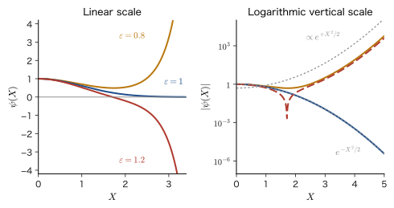
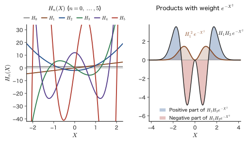
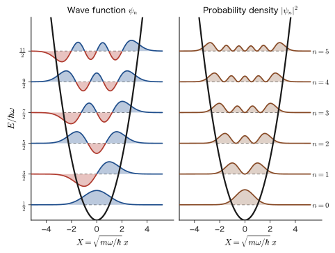
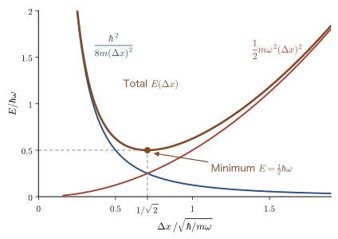
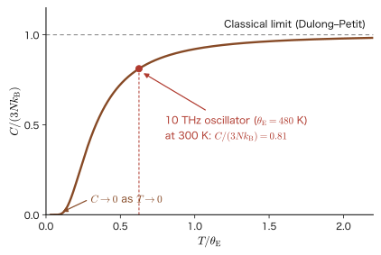

Chapter 13The Harmonic Oscillator — Series Solution and Hermite Polynomials
When we attach a weight to the end of a spring, pull it, and release it, the weight repeats its back-and-forth motion with the same period. The period of this simple harmonic motion is determined only by the mass of the weight and the stiffness of the spring, not by the amplitude. Since the energy is proportional to the square of the amplitude, we can make the energy any value we like by changing the amplitude little by little. However, when we study this same motion at the scale of atoms and molecules according to the Schrödinger equation, the energy takes only the equally spaced, discrete values $\tfrac12\hbar\omega,\ \tfrac32\hbar\omega,\ \tfrac52\hbar\omega,\dots$. Moreover, the lowest energy is not $0$ but $\tfrac12\hbar\omega$ (the zero-point energy), and the particle cannot be at rest even at absolute zero. The aim of this chapter is to derive this result without skipping a single line of the intermediate equations.
The harmonic oscillator is one of the most important problems in quantum mechanics. The reason is that near a stable equilibrium position, any potential can be approximated by a parabola (the second term of the Taylor expansion; Introductory University Physics, Chapter 4, Section 4.6). From the vibration between two atoms in a molecule, to atoms swaying about their lattice sites in a crystal (lattice vibrations, phonons), and even to each mode of the electromagnetic field (photons), all “small oscillations about equilibrium” can be treated as harmonic oscillators. Properties of materials such as infrared absorption, Raman scattering, specific heat, and the Debye–Waller factor in X-ray diffraction start from the results of this chapter.
The method of solution contrasts with that for the infinite well (Chapter 10). For the well, the solutions are the familiar functions $\sin$ and $\cos$, and the boundary condition “$0$ at both ends” gave rise to the quantization of energy. For the harmonic oscillator, we first nondimensionalize the variable, split off the behavior at large distances, $e^{-X^2/2}$, and solve for the remaining part by a power series. In general, a power series does not stop partway; it diverges like $e^{X^2}$ and makes the wave function infinite as $x\to\pm\infty$. The condition that the series terminates after a finite number of terms (becomes a polynomial) gives rise to the quantization of energy. That polynomial is the Hermite polynomial. We then compare graphs of the wave functions with classical vibration, understand the origin of the zero-point energy through the uncertainty principle, calculate expectation values with Gaussian integrals, and finally look at the symmetry between position and momentum in the momentum representation (the Fourier transform). The algebraic method of solution (creation and annihilation operators) is treated in Chapter 56.
- Explain why the harmonic oscillator is important in quantum mechanics (the parabolic approximation near the bottom of a potential), and estimate $\omega$ and $\hbar\omega$ from the spring constant $k_0=V''(x_{\mathrm e})$
- Nondimensionalize the Schrödinger equation with $X=\sqrt{m\omega/\hbar}\,x$ and $\varepsilon=2E/\hbar\omega$, and, by putting $\psi=f\,e^{-X^2/2}$, derive Hermite's differential equation $f''-2Xf'+(\varepsilon-1)f=0$
- Derive the recurrence relation $a_{j+2}=\dfrac{2j+1-\varepsilon}{(j+1)(j+2)}a_j$ from the power series, and derive $E_n=(n+\tfrac12)\hbar\omega$ from the condition $\varepsilon=2n+1$ under which the series terminates after a finite number of terms
- Using the definition, generating function, recurrence relation, and orthogonality of the Hermite polynomials $H_n$, write down the normalized eigenfunctions $\psi_n$
- Compare $\lvert\psi_n\rvert^2$ with the classical probability density $1/(\pi\sqrt{x_{\mathrm t}^2-x^2})$, and calculate the probability in the forbidden region ($15.7\ \%$ for $n=0$)
- Derive the zero-point energy $\tfrac12\hbar\omega$ from the uncertainty principle (the arithmetic–geometric mean inequality), and explain that it is a “lower bound on the energy,” not a “fluctuation”
- Find $\expval{p}$, $\expval{T}$, $\expval{V}$, and $\expval{x^2}$ with the recurrence relation for Gaussian integrals, and use the virial theorem $\expval{T}=\expval{V}=E/2$ and the Hellmann–Feynman theorem
- Derive the Fourier transform $\phi_n(p)=(-i)^n\psi_n$ of $\psi_n$, and explain the symmetry between position and momentum
Source notes: Yasuhide Mochizuki, “Physics Notes: Quantum Mechanics 2,” pp. 18–21, and another set of handwritten notes on the harmonic oscillator, three pages long.
13.1 What Is a Harmonic Oscillator? — Near the Bottom, Every Potential Is a Parabola
13.1.1 A particle attached to a spring — the harmonic oscillator of classical mechanics
A harmonic oscillator is a particle that, like a mass on a spring, undergoes simple harmonic motion under a force proportional to its displacement $x$ from the equilibrium position. Let us review it in classical mechanics (Introductory University Physics, Chapter 7, Section 7.1). When a particle of mass $m$ is attached to a spring with spring constant $k_0$, the particle experiences the restoring force $F=-k_0x$, and the equation of motion is $m\ddot{x}=-k_0x$. Here, we write the spring constant as $k_0$ in order to distinguish it from the wavenumber $k$, which expresses the number of waves. Note that in the previous chapter (Chapter 12, Section 12.3) we used $k_0=\sqrt{2mE}/\hbar$ as the symbol for a wavenumber. The $k_0$ in this chapter and in Chapter 19 is the spring constant, a quantity different from that one. If we let $\omega=\sqrt{k_0/m}$, the general solution is
\begin{equation} x(t)=A\cos(\omega t+\delta)\qquad\left(\omega=\sqrt{\frac{k_0}{m}}\right) \label{eq:13-classical} \end{equation}Here $A\ge0$ is the amplitude and $\delta$ is the initial phase. Neither the period $\tau=2\pi/\omega$ nor the frequency $\nu=\omega/2\pi$ depends on the amplitude $A$. The potential energy that gives the force $F=-\dd V/\dd x=-k_0x$ is $V(x)=\tfrac12k_0x^2=\tfrac12m\omega^2x^2$, a parabola with its minimum at the origin. Using the fact that the particle comes to rest momentarily (speed $0$) at the edges $x=\pm A$, the total energy is
$$ E=\frac12mv^2+\frac12m\omega^2x^2=\frac12m\omega^2A^2 $$Since $A$ may take any value greater than or equal to $0$, in classical mechanics the energy $E$ can also take any value greater than or equal to $0$. The case $E=0$ ($A=0$) is the state at rest at the origin. The points $x=\pm A$ are where the kinetic energy becomes $0$ and the particle reverses its direction; they are called turning points. A classical particle can never enter the region $\lvert x\rvert\gt A$ (where $V\gt E$, so that the kinetic energy would become negative).
Definition 13.1: One-dimensional harmonic oscillator
When a particle of mass $m$ moves along the $x$ axis and its potential energy is given by
\begin{equation} V(x)=\frac12m\omega^2x^2\qquad(\omega\gt0) \label{eq:13-V} \end{equation}the particle is called a one-dimensional harmonic oscillator. Here $\omega$ is the angular frequency in classical mechanics ($\omega=\sqrt{k_0/m}$). The name “harmonic” comes from the fact that the motion is a simple harmonic motion described by a single $\cos$ or $\sin$ (a harmonic function).
The problem we solve in this chapter is the following. A particle of mass $m$ (it may be an electron or an atom) moves in the potential of Eq. \eqref{eq:13-V} in a state independent of time (a stationary state). Consider the time-independent Schrödinger equation (Chapter 9)
\begin{equation} -\frac{\hbar^2}{2m}\frac{\dd^2\psi}{\dd x^2}+\frac12m\omega^2x^2\,\psi=E\,\psi \label{eq:13-tise} \end{equation}Find all the wave functions $\psi(x)$ that satisfy it, together with the energies $E$. Here $\psi$ is assumed to tend to $0$ as $x\to\pm\infty$ and to be normalizable (Section 13.2).
Notation: The state number is $n=0,1,2,\dots$
In this chapter we count the states as $n=0,1,2,\dots$ and call the ground state (the state with the lowest energy) $n=0$. For the infinite well (Chapter 10) and the hydrogen atom we counted from $n=1$, so do not confuse the two. Also, the wave function in this chapter is not the time-dependent $\Psi(x,t)$ but the spatial part of the stationary state, $\psi_n(x)$ ($\Psi_n(x,t)=\psi_n(x)\,e^{-iE_nt/\hbar}$).
13.1.2 Why is the harmonic oscillator important? — The bottom of a potential is a parabola
The potential $V(x)$ felt by a real particle is not necessarily a parabola. For example, the potential between two atoms in a molecule becomes sharply repulsive when they come too close, and when they are far apart the bond breaks and the potential approaches a constant value (the brown curve in Figure 13.1(b)). Even so, if we look only at the immediate neighborhood of the stable equilibrium position $x_{\mathrm e}$ (the point where $V$ has a minimum), $V(x)$ can be approximated by a parabola. The Taylor expansion about $x_{\mathrm e}$ reads
\begin{equation} V(x)=V(x_{\mathrm e})+V'(x_{\mathrm e})\,(x-x_{\mathrm e})+\frac12V''(x_{\mathrm e})\,(x-x_{\mathrm e})^2+\frac16V'''(x_{\mathrm e})\,(x-x_{\mathrm e})^3+\cdots \label{eq:13-taylor} \end{equation}(for the potential energy curve, see Introductory University Physics, Chapter 4, Section 4.6). At the minimum the force $-V'(x_{\mathrm e})$ is $0$, so the second term vanishes, and $V''(x_{\mathrm e})\gt0$. The first term $V(x_{\mathrm e})$ is just a constant, and by shifting the origin of energy it can be made $0$. When the displacement $x-x_{\mathrm e}$ is small, the terms of third order and higher are much smaller than the second-order term and can be neglected. Moving the origin of the coordinate to $x_{\mathrm e}$ ($x-x_{\mathrm e}\to x$), we obtain
\begin{equation} V(x)\approx\frac12k_0x^2,\qquad k_0\equiv V''(x_{\mathrm e}),\qquad \omega=\sqrt{\frac{k_0}{m}}=\sqrt{\frac{V''(x_{\mathrm e})}{m}} \label{eq:13-k0} \end{equation}which gives the harmonic oscillator potential of Eq. \eqref{eq:13-V}. In other words, the bottom of every potential is a parabola. However complicated the system, small vibrations about a stable equilibrium can be treated as a harmonic oscillator determined by the single spring constant $k_0=V''(x_{\mathrm e})$, so the harmonic oscillator becomes the problem with the widest range of applications in quantum mechanics.
Application: Harmonic oscillators in materials
Molecules: The internuclear distance of a diatomic molecule vibrates about the equilibrium internuclear distance $r_{\mathrm e}$. This vibration is the molecular vibration observed in infrared absorption spectra and Raman spectra (Chapter 19). Crystals: Each atom in a crystal undergoes thermal vibration about its lattice site. The particle obtained by quantizing this lattice vibration (the phonon) determines the specific heat and heat conduction of solids (Section 13.8, Chapter 60). Light: Each mode of the electromagnetic field obeys, mathematically, the same equation as the harmonic oscillator, and the quantum of its energy is the photon (Planck's hypothesis in Chapter 3). One and the same equation describes molecules, crystals, and light alike.
Caution: The harmonic approximation is good only near the bottom
The parabolic approximation \eqref{eq:13-k0} is valid only when $x-x_{\mathrm e}$ is small. In states where the amplitude of the vibration is large (the energy is high), the terms of third order and higher (the anharmonic terms) become significant, the spacing between levels shrinks, and eventually the molecule dissociates. This anharmonicity is treated with the Morse potential (Chapter 20) and with perturbation theory (Chapter 27). The results of this chapter are accurate for states of low $n$, whose levels lie near the bottom.
Example 13.1: The spring constant and $\hbar\omega$ of an atom in a copper crystal
Suppose that an atom in a crystal of copper (Cu, atomic weight $63.546$) undergoes simple harmonic motion at frequency $\nu=10\ \mathrm{THz}=1.0\times10^{13}\ \mathrm{Hz}$ (the actual lattice vibrations of Cu range from a few THz to about 7 THz; here we tentatively use the convenient value $10\ \mathrm{THz}$ to make the calculation easy). Find (1) the mass of one atom, (2) the spring constant $k_0$, (3) $\hbar\omega$ (in $\mathrm{meV}$), and (4) $\hbar\omega/k_{\mathrm B}$ (the value converted into a temperature).
Solution. (1) Multiplying the atomic weight $63.546$ by the atomic mass unit $u=1.6605\times10^{-27}\ \mathrm{kg}$, we obtain $m=63.546\times1.6605\times10^{-27}=1.0552\times10^{-25}\ \mathrm{kg}$.
(2) The angular frequency is $\omega=2\pi\nu=2\pi\times1.0\times10^{13}=6.283\times10^{13}\ \mathrm{s^{-1}}$. From Eq. \eqref{eq:13-k0}, $k_0=m\omega^2$, so
$$ k_0=1.0552\times10^{-25}\times(6.283\times10^{13})^2=1.0552\times10^{-25}\times3.948\times10^{27}=4.17\times10^{2}\ \mathrm{N/m}. $$(The spring constant of a familiar spring is of the order of $10^{1}$ to $10^{2}\ \mathrm{N/m}$, so this is several times stiffer. Because an atom has an extremely small mass, this is enough to give a vibration as fast as $10\ \mathrm{THz}$.)
(3) $\hbar\omega=h\nu=4.1357\times10^{-15}\ \mathrm{eV\,s}\times1.0\times10^{13}\ \mathrm{s^{-1}}=4.136\times10^{-2}\ \mathrm{eV}=41.4\ \mathrm{meV}$.
(4) Dividing $\hbar\omega=6.626\times10^{-21}\ \mathrm{J}$ by $k_{\mathrm B}=1.3806\times10^{-23}\ \mathrm{J/K}$, we get $\hbar\omega/k_{\mathrm B}=480\ \mathrm{K}$. The thermal energy at room temperature $300\ \mathrm{K}$, $k_{\mathrm B}T=25.9\ \mathrm{meV}$, is smaller than this $\hbar\omega=41.4\ \mathrm{meV}$. Therefore, even at room temperature, the lattice vibrations show “quantum” behavior (Section 13.8).
Example 13.2: The spring constant at the bottom of the hydrogen molecule potential
Represent the internuclear potential of the hydrogen molecule $\mathrm{H_2}$ by the Morse potential (Chapter 20) $V(x)=D\,(1-e^{-ax})^2$ ($x=r-r_{\mathrm e}$, and $D$ is the depth of the bond). The Morse potential is a simple model of the internuclear potential of a diatomic molecule, with the well depth $D$ and $a$, which determines the spread of the well. Also, the reduced mass $\mu=\dfrac{m_1m_2}{m_1+m_2}$ is the mass obtained when the two atoms are replaced by a single particle (Chapter 19). (1) Expand in a Taylor series near the bottom and show that $k_0=2Da^2$. (2) From the vibrational wavenumber $\tilde{\nu}=4401\ \mathrm{cm^{-1}}$ and the reduced mass $\mu=8.368\times10^{-28}\ \mathrm{kg}$, find $k_0$, and then find $a$ using $D=4.748\ \mathrm{eV}$.
Solution. (1) From $e^{-ax}=1-ax+\tfrac12a^2x^2-\cdots$ we get $1-e^{-ax}=ax-\tfrac12a^2x^2+\cdots$. Squaring this gives $(1-e^{-ax})^2=a^2x^2-a^3x^3+\cdots$. Hence $V(x)=Da^2x^2-Da^3x^3+\cdots$. The first term is the harmonic term, and from $\tfrac12k_0=Da^2$ we get $k_0=2Da^2$ (the second and later terms are the anharmonic terms).
(2) The angular frequency of a vibration with wavenumber $\tilde{\nu}$ is $\omega=2\pi c\tilde{\nu}$ (since $\omega=2\pi\nu=2\pi c/\lambda=2\pi c\tilde{\nu}$). Since $\tilde{\nu}=4401\ \mathrm{cm^{-1}}=4.401\times10^{5}\ \mathrm{m^{-1}}$, we have $\omega=2\pi\times2.998\times10^{8}\times4.401\times10^{5}=8.29\times10^{14}\ \mathrm{s^{-1}}$. Here the mass of the vibrating particle is the reduced mass $\mu$ of the two atoms (Chapter 19), so
$$ k_0=\mu\omega^2=8.368\times10^{-28}\times(8.29\times10^{14})^2=5.75\times10^{2}\ \mathrm{N/m}. $$Using $D=4.748\ \mathrm{eV}=4.748\times1.602\times10^{-19}=7.607\times10^{-19}\ \mathrm{J}$,
$$ a=\sqrt{\frac{k_0}{2D}}=\sqrt{\frac{575}{2\times7.607\times10^{-19}}}=\sqrt{3.78\times10^{20}}=1.94\times10^{10}\ \mathrm{m^{-1}}=1.94\ \mathring{\mathrm{A}}^{-1}. $$(The scale of the spread of the Morse potential, $1/a\approx0.51\ \mathring{\mathrm{A}}$, is of the same order as the interatomic distance $0.74\ \mathring{\mathrm{A}}$.)
13.2 Nondimensionalization and the Behavior at Large Distances
13.2.1 Rearranging the equation and making it dimensionless
First, we move $E\psi$ on the right-hand side of Eq. \eqref{eq:13-tise} to the left-hand side and collect the terms containing $\psi$.
\begin{equation} -\frac{\hbar^2}{2m}\frac{\dd^2\psi}{\dd x^2}+\left(\frac12m\omega^2x^2-E\right)\psi=0 \label{eq:13-move} \end{equation}As it stands, the three constants $m$, $\omega$, and $\hbar$ are scattered through the equation. To make the coefficient of $\psi''$ simple, we multiply both sides by $-\dfrac{2}{\hbar\omega}$ (the same as dividing by $-\dfrac{\hbar\omega}{2}$). The coefficients of the terms become
$$ \left(-\frac{\hbar^2}{2m}\right)\!\left(-\frac{2}{\hbar\omega}\right)=\frac{\hbar}{m\omega},\qquad \left(\frac12m\omega^2\right)\!\left(-\frac{2}{\hbar\omega}\right)=-\frac{m\omega}{\hbar},\qquad (-E)\left(-\frac{2}{\hbar\omega}\right)=\frac{2E}{\hbar\omega} $$and therefore we obtain
\begin{equation} \frac{\hbar}{m\omega}\frac{\dd^2\psi}{\dd x^2}-\frac{m\omega}{\hbar}\,x^2\,\psi+\frac{2E}{\hbar\omega}\,\psi=0 \label{eq:13-arranged} \end{equation}The coefficients of the three terms are all “numbers without dimension.” Indeed, the unit of $\hbar/(m\omega)$ is $\mathrm{J\,s}/(\mathrm{kg\,s^{-1}})=\mathrm{m^2}$ (the square of a length), and multiplying it by the unit $\mathrm{m^{-2}}$ of $\psi''$ gives a dimensionless quantity. Both $(m\omega/\hbar)\,x^2$ and $2E/(\hbar\omega)$ (the energy divided by the energy $\hbar\omega$) are also dimensionless. The length $\sqrt{\hbar/(m\omega)}$ and the energy $\hbar\omega$ that appeared here are the natural units of this problem.
Definition 13.2: Dimensionless coordinate $X$ and dimensionless energy $\varepsilon$
For the harmonic oscillator, we define the unit of length $x_0$, the dimensionless coordinate $X$ measured in that unit, and the dimensionless energy $\varepsilon$ by
\begin{equation} x_0=\sqrt{\frac{\hbar}{m\omega}},\qquad X=\frac{x}{x_0}=\sqrt{\frac{m\omega}{\hbar}}\,x,\qquad \varepsilon=\frac{2E}{\hbar\omega} \label{eq:13-dimless-def} \end{equation}These are the definitions.
Since $X=x/x_0$ gives $x=x_0X$, we have $\dfrac{\dd x}{\dd X}=x_0$. Therefore, by the chain rule,
$$ \frac{\dd^2\psi}{\dd X^2}=\left(\frac{\dd x}{\dd X}\right)^{\!2}\frac{\dd^2\psi}{\dd x^2}=x_0^2\,\frac{\dd^2\psi}{\dd x^2}=\frac{\hbar}{m\omega}\frac{\dd^2\psi}{\dd x^2} $$which is exactly the first term of Eq. \eqref{eq:13-arranged}. Also, $\dfrac{m\omega}{\hbar}x^2=\dfrac{x^2}{x_0^2}=X^2$. Hence Eq. \eqref{eq:13-arranged} can be written as
\begin{equation} \frac{\dd^2\psi}{\dd X^2}+\left(\varepsilon-X^2\right)\psi=0 \label{eq:13-dimless} \end{equation}(here we use $\psi$ as a function of $X$). The quantities $m$, $\omega$, and $\hbar$ have disappeared from the equation completely, and the only parameter left is the dimensionless energy $\varepsilon$. Therefore, whether the oscillating particle is an electron or an atom, and for a harmonic oscillator of any mass and spring constant, the equation to be solved is the same Eq. \eqref{eq:13-dimless}.
Intuition: $\varepsilon$ is the square of the turning point
At a classical turning point $x_{\mathrm t}$ the kinetic energy is $0$, so $E=\tfrac12m\omega^2x_{\mathrm t}^2$, that is, $x_{\mathrm t}^2=\dfrac{2E}{m\omega^2}=\dfrac{\hbar}{m\omega}\cdot\dfrac{2E}{\hbar\omega}=x_0^2\,\varepsilon$. That is, the turning points measured in the dimensionless coordinate $X$ are $X_{\mathrm t}=\pm\sqrt{\varepsilon}$. If we write Eq. \eqref{eq:13-dimless} as $\psi''=(X^2-\varepsilon)\,\psi$, then in the classically allowed region $X^2\lt\varepsilon$ the quantities $\psi''$ and $\psi$ have opposite signs and $\psi$ undulates (is oscillatory), whereas in the classically forbidden region $X^2\gt\varepsilon$ the quantities $\psi''$ and $\psi$ have the same sign and $\psi$ grows or decays exponentially. This change of sign occurs at $X=\pm\sqrt{\varepsilon}$.
Example 13.3: The unit of length $x_0$ of the harmonic oscillator
(1) Find $x_0$ when an electron (mass $m_{\mathrm e}$) is placed in an oscillator with $\hbar\omega=1\ \mathrm{eV}$. (2) Find $x_0$ for the vibration of the HCl molecule (harmonic-approximation wavenumber $2990\ \mathrm{cm^{-1}}$, reduced mass $\mu=1.627\times10^{-27}\ \mathrm{kg}$), and compare it with the bond length $127\ \mathrm{pm}$.
Solution. (1) Rewriting $x_0=\sqrt{\hbar/(m\omega)}=\hbar/\sqrt{m\,\hbar\omega}$, we can use $\hbar\omega=1\ \mathrm{eV}=1.602\times10^{-19}\ \mathrm{J}$ directly.
$$ x_0=\frac{1.0546\times10^{-34}}{\sqrt{9.109\times10^{-31}\times1.602\times10^{-19}}}=\frac{1.0546\times10^{-34}}{3.820\times10^{-25}}=2.76\times10^{-10}\ \mathrm{m}=0.276\ \mathrm{nm}. $$(2) Since $\hbar\omega=hc\tilde{\nu}=1.2398\times10^{-4}\ \mathrm{eV\,cm}\times2990\ \mathrm{cm^{-1}}=0.3707\ \mathrm{eV}=5.939\times10^{-20}\ \mathrm{J}$,
$$ x_0=\frac{\hbar}{\sqrt{\mu\,\hbar\omega}}=\frac{1.0546\times10^{-34}}{\sqrt{1.627\times10^{-27}\times5.939\times10^{-20}}}=\frac{1.0546\times10^{-34}}{9.83\times10^{-24}}=1.07\times10^{-11}\ \mathrm{m}=10.7\ \mathrm{pm}. $$This is about $8\ \%$ of the bond length (about $127\ \mathrm{pm}$). The heavier the oscillator (the larger $\mu$) and the stiffer the spring (the larger $\hbar\omega$), the smaller $x_0$ becomes.
13.2.2 Behavior at large distances — $e^{\pm X^2/2}$
Eq. \eqref{eq:13-dimless} has the $X$-dependent coefficient $X^2$, so it cannot be solved with $\sin$ or $\cos$. We therefore first examine how the solution behaves as $x\to\pm\infty$, that is, as $X\to\pm\infty$. The quantity $\varepsilon$ is a fixed number (determined by the energy), whereas $X^2$ grows without bound, so where $\lvert X\rvert$ is sufficiently large we have $\varepsilon\ll X^2$, and we can approximate $(\varepsilon-X^2)\psi\approx-X^2\psi$. Therefore, at large distances, the equation can be regarded as
\begin{equation} \frac{\dd^2\psi}{\dd X^2}-X^2\psi\approx0\qquad(\lvert X\rvert\gg1) \label{eq:13-asym} \end{equation}To get a feel for its solutions, let us try $\psi=e^{\pm X^2/2}$ (the double signs are taken in the same order). We have $\psi'=\pm X\,e^{\pm X^2/2}$, and differentiating once more with the product rule gives
$$ \psi''=\pm e^{\pm X^2/2}+(\pm X)^2e^{\pm X^2/2}=(X^2\pm1)\,e^{\pm X^2/2} $$Therefore $\psi''-X^2\psi=\pm\psi$, and the deviation $\pm\psi$ of the left-hand side of Eq. \eqref{eq:13-asym} from $0$ is only $1/X^2$ times the leading term $X^2\psi$, so it can be neglected for $\lvert X\rvert\gg1$. Hence, at large distances, there are two types of solutions,
\begin{equation} \psi(X)\approx e^{\pm X^2/2}\qquad(\lvert X\rvert\gg1) \label{eq:13-asym-sol} \end{equation}Here $\approx$ means that only the exponential parts agree, ignoring factors that are powers of $X$ (a slightly more careful analysis gives the forms $X^{-(\varepsilon+1)/2}e^{+X^2/2}$ and $X^{(\varepsilon-1)/2}e^{-X^2/2}$). This is enough to decide which exponential function the solution resembles at large distances. In general, the solution is a linear combination of these two, $A\,e^{X^2/2}+B\,e^{-X^2/2}$.
Caution: Boundary condition—$e^{+X^2/2}$ is unacceptable
The function $e^{+X^2/2}$ diverges to infinity as $\lvert X\rvert\to\infty$. Such a wave function cannot be normalized as $\displaystyle\int\lvert\psi\rvert^2\dd x=1$, which the Born interpretation (Chapter 8) requires, so it does not represent a bound state. The wave function of a bound state must satisfy the boundary condition
$$ \lim_{x\to\pm\infty}\psi(x)=0 $$Therefore the form $\psi=f\,e^{+X^2/2}$, in which $e^{+X^2/2}$ is factored out, diverges as $x\to\pm\infty$ when $f$ is a function that does not grow, such as a constant or a polynomial, and so it is unacceptable; we factor out $e^{-X^2/2}$ instead. In the infinite well, “$\psi=0$ at the walls” produced the quantization, whereas in the harmonic oscillator “$\psi\to0$ at infinity” produces the quantization (Section 13.3).
13.2.3 Setting $\psi=f\,e^{-X^2/2}$ and deriving Hermite's equation
Taking care of the large-distance behavior $e^{-X^2/2}$ first, we set the wave function to be
\begin{equation} \psi(X)=f(X)\,e^{-X^2/2} \label{eq:13-ansatz} \end{equation}Here $f(X)$ is the remaining part after $e^{-X^2/2}$ is split off, a function that is not yet determined. We substitute this into Eq. \eqref{eq:13-dimless} to obtain the equation for $f$.
Derivation: The equation for $f$
Using the product rule and $\dfrac{\dd}{\dd X}e^{-X^2/2}=-X\,e^{-X^2/2}$, we differentiate $\psi=f\,e^{-X^2/2}$ twice.
$$ \psi'=f'\,e^{-X^2/2}+f\,(-X)\,e^{-X^2/2}=(f'-Xf)\,e^{-X^2/2} $$We differentiate once more. The derivative of $(f'-Xf)$ is $f''-f-Xf'$, and differentiating $e^{-X^2/2}$ produces $-X$, so
$$ \psi''=(f''-f-Xf')\,e^{-X^2/2}+(f'-Xf)(-X)\,e^{-X^2/2}=\left(f''-2Xf'+(X^2-1)f\right)e^{-X^2/2} $$Substituting this into $\psi''+(\varepsilon-X^2)\psi$ of Eq. \eqref{eq:13-dimless}, the $X^2f$ terms cancel each other:
$$ \left[f''-2Xf'+(X^2-1)f+(\varepsilon-X^2)f\right]e^{-X^2/2}=\left[f''-2Xf'+(\varepsilon-1)f\right]e^{-X^2/2}=0 $$Since $e^{-X^2/2}$ is never $0$, the expression in the brackets must be $0$.
∎
Definition 13.3: Hermite's differential equation
Setting $\psi=f\,e^{-X^2/2}$, the Schrödinger equation of the harmonic oscillator reduces to the following equation for $f(X)$:
\begin{equation} \frac{\dd^2f}{\dd X^2}-2X\frac{\dd f}{\dd X}+(\varepsilon-1)\,f=0 \label{eq:13-hermite-ode} \end{equation}This is called Hermite's differential equation. Here $\varepsilon=2E/\hbar\omega$.
Math Tool: How to solve Hermite's differential equation
Eq. \eqref{eq:13-hermite-ode} is a second-order linear differential equation, but its coefficients contain $X$, so it cannot be solved by assuming $e^{\lambda X}$ as for an equation with constant coefficients. Such an equation is solved by the power-series method (a method in which we set the solution as $f=\sum_ja_jX^j$ and determine the coefficients one by one). For the mathematical technique, see University Mathematics, Chapter 39, Section 39.2; the solution of this equation itself is in University Mathematics, Chapter 46, Section 46.2. In this chapter, we solve this equation in the next section, Section 13.3, and read off its physical meaning (quantization).
Example 13.4: Determining $\varepsilon$ by substituting directly into Hermite's equation
Substitute (1) $f=1$ and (2) $f=X$ into Eq. \eqref{eq:13-hermite-ode}, and find the value of $\varepsilon$ for which each is a solution. What is the corresponding energy $E$?
Solution. (1) If $f=1$, then $f'=f''=0$, so Eq. \eqref{eq:13-hermite-ode} becomes $(\varepsilon-1)\cdot1=0$, that is, $\varepsilon=1$. Then $E=\tfrac12\hbar\omega\,\varepsilon=\tfrac12\hbar\omega$. The wave function is $\psi=e^{-X^2/2}$.
(2) If $f=X$, then $f'=1$ and $f''=0$, so $0-2X\cdot1+(\varepsilon-1)X=(\varepsilon-3)X=0$, that is, $\varepsilon=3$. Then $E=\tfrac32\hbar\omega$, and the wave function is $\psi=X\,e^{-X^2/2}$.
(This can also be checked by substituting $\psi=X\,e^{-X^2/2}$ directly into Eq. \eqref{eq:13-dimless}. Since $\psi'=(1-X^2)e^{-X^2/2}$ and $\psi''=(X^3-3X)e^{-X^2/2}$, we get $\psi''+(\varepsilon-X^2)\psi=(X^3-3X+\varepsilon X-X^3)e^{-X^2/2}=(\varepsilon-3)X\,e^{-X^2/2}$.)
13.3 The Series Solution and the Quantization of Energy
13.3.1 Substituting a power series — the recurrence relation for the coefficients
Let us look for the solution of Hermite's equation \eqref{eq:13-hermite-ode} in the form of the power series
\begin{equation} f(X)=\sum_{j=0}^{\infty}a_jX^j=a_0+a_1X+a_2X^2+a_3X^3+\cdots \label{eq:13-series} \end{equation}and determine the coefficients $a_j$. The coefficients of this equation ($1$, $-2X$, $\varepsilon-1$) are all polynomials, so the solution can be written as a power series that converges for all values of $X$ (University Mathematics, Chapter 39, Section 39.2). Differentiating term by term gives
$$ f'=\sum_{j=1}^{\infty}j\,a_jX^{j-1},\qquad f''=\sum_{j=2}^{\infty}j(j-1)\,a_jX^{j-2},\qquad 2Xf'=\sum_{j=1}^{\infty}2j\,a_jX^{j}=\sum_{j=0}^{\infty}2j\,a_jX^{j} $$(in the last equality, the $j=0$ term is $0$, so we made the sum start at $j=0$). In the sum for $f''$, to line up the powers of $X$, we shift the index by $j\to j+2$ and rewrite it as
$$ f''=\sum_{j=0}^{\infty}(j+2)(j+1)\,a_{j+2}X^{j} $$(the sum that began at $j=2$ now begins at $j=0$, and $X^{j-2}$ becomes $X^{j}$). Substituting these into Eq. \eqref{eq:13-hermite-ode} gives
$$ \sum_{j=0}^{\infty}\Bigl[(j+2)(j+1)\,a_{j+2}-2j\,a_j+(\varepsilon-1)\,a_j\Bigr]X^{j}=0 $$A power series is identically $0$ only when all the coefficients of $X^j$ are $0$. Noting that $-2j+(\varepsilon-1)=-(2j+1-\varepsilon)$, the condition on the coefficients becomes the following.
Theorem 13.1: Recurrence relation for the coefficients
The power series \eqref{eq:13-series} satisfies Hermite's equation \eqref{eq:13-hermite-ode} if and only if
\begin{equation} a_{j+2}=\frac{2j+1-\varepsilon}{(j+1)(j+2)}\,a_j\qquad(j=0,1,2,\dots) \label{eq:13-recur} \end{equation}holds.
Since this recurrence relation connects only $a_j$ and $a_{j+2}$, the even-numbered coefficients (starting from $a_0$) and the odd-numbered coefficients (starting from $a_1$) split into two mutually independent series. The coefficients $a_0$ and $a_1$ can be chosen freely (they correspond to the two arbitrary constants of a second-order differential equation). Written out explicitly,
$$ a_2=\frac{1-\varepsilon}{2}\,a_0,\quad a_4=\frac{5-\varepsilon}{12}\,a_2=\frac{(1-\varepsilon)(5-\varepsilon)}{24}\,a_0,\quad\dots;\qquad a_3=\frac{3-\varepsilon}{6}\,a_1,\quad a_5=\frac{7-\varepsilon}{20}\,a_3=\frac{(3-\varepsilon)(7-\varepsilon)}{120}\,a_1,\quad\dots $$Therefore the general solution is the sum of an even-function series and an odd-function series,
$$ f(X)=a_0\Bigl[1+\frac{1-\varepsilon}{2}X^2+\frac{(1-\varepsilon)(5-\varepsilon)}{24}X^4+\cdots\Bigr]+a_1\Bigl[X+\frac{3-\varepsilon}{6}X^3+\frac{(3-\varepsilon)(7-\varepsilon)}{120}X^5+\cdots\Bigr] $$So far there is no restriction on the value of $\varepsilon$, and a solution exists for any $\varepsilon$. The quantization of energy comes out of the boundary condition, which we examine next.
13.3.2 If the series does not terminate, it diverges — the quantization condition
When the series continues indefinitely, we examine how the terms with large $j$ behave. Letting $j\to\infty$ in the recurrence relation \eqref{eq:13-recur} gives
\begin{equation} \frac{a_{j+2}}{a_j}=\frac{2j+1-\varepsilon}{(j+1)(j+2)}\ \longrightarrow\ \frac{2j}{j^2}=\frac{2}{j}\qquad(j\to\infty) \label{eq:13-ratio} \end{equation}Let us compare this with the series of the exponential function $e^{X^2}$. The coefficient of $X^{2m}$ in $e^{X^2}=\displaystyle\sum_{m=0}^{\infty}\frac{X^{2m}}{m!}$ is $b_{2m}=\dfrac{1}{m!}$, so the ratio of adjacent even-order coefficients is, with $j=2m$,
$$ \frac{b_{j+2}}{b_j}=\frac{1/(m+1)!}{1/m!}=\frac{1}{m+1}=\frac{2}{2m+2}=\frac{2}{j+2}\ \longrightarrow\ \frac{2}{j}\qquad(j\to\infty) $$which is the same as Eq. \eqref{eq:13-ratio}. That is, if the series does not terminate, then at large $X$ the function $f(X)$ grows at the same rate as $e^{X^2}$ (apart from a power-law factor). The wave function then behaves as
$$ \psi=f\,e^{-X^2/2}\sim e^{X^2}\,e^{-X^2/2}=e^{+X^2/2}\qquad(X\to\infty) $$which turns out to be the form $e^{+X^2/2}$ that we ruled out as “unacceptable” in Section 13.2.2. Figure 13.2 shows this numerically. We plotted the even solution starting from $f(0)=1$, $f'(0)=0$ for three values of $\varepsilon$. Only for exactly $\varepsilon=1$ do we get $\psi=e^{-X^2/2}$ (Example 13.4), which approaches $0$; when $\varepsilon$ is shifted slightly to $0.8$ or $1.2$, $\psi$ diverges to $+\infty$ or $-\infty$ from around $X=2$.

Therefore, in order to satisfy the boundary condition $\psi\to0$ ($x\to\pm\infty$), the series must stop after a finite number of terms and become a polynomial (the even-order series is invariant under $X\to-X$, whereas the odd-order series changes sign, so the divergence cannot be canceled at both $X\to+\infty$ and $X\to-\infty$. Hence the even-order series and the odd-order series must each be cut off so as to become a polynomial). That is, there must be an integer $n\ge0$ such that $a_n\ne0$ and $a_{n+2}=0$. If so, then by the recurrence relation \eqref{eq:13-recur}, $a_{n+4},a_{n+6},\dots$ also all become $0$. The condition $a_{n+2}=0$ holds when the numerator obtained by setting $j=n$ in Eq. \eqref{eq:13-recur} is $0$, that is, when $2n+1-\varepsilon=0$.
Theorem 13.2: Quantization of the energy of the harmonic oscillator
The Schrödinger equation of the harmonic oscillator has a solution satisfying the boundary condition $\psi\to0$ ($x\to\pm\infty$) only when the dimensionless energy $\varepsilon=2E/\hbar\omega$ takes the values
\begin{equation} \varepsilon=2n+1\quad(n=0,1,2,\dots)\qquad\text{that is}\qquad E_n=\left(n+\frac12\right)\hbar\omega \label{eq:13-En} \end{equation}$n$ is called the quantum number.
Let us now pay attention to parity. When $n$ is even, we terminate the even-order series and keep only $a_0,a_2,\dots,a_n$. The odd-order series $a_1,a_3,\dots$ does not terminate, because $j$ is odd and so can never be $j=n$ (even), and hence the condition $a_{j+2}=0$ cannot be satisfied. We therefore have to eliminate that series by setting $a_1=0$. When $n$ is odd, conversely, we set $a_0=0$ to eliminate the even-order series and keep the odd-order series $a_1,a_3,\dots,a_n$. In either case $f$ is a polynomial of degree $n$, which is an even function if $n$ is even and an odd function if it is odd.
Intuition: Contrast with the infinite well—where does quantization come from?
In the infinite well (Chapter 10), the equation has solutions ($\sin kx$ and $\cos kx$) for any $E$, and the boundary condition “$\psi=0$ at the walls” restricted $k$ and produced $E_n\propto n^2$. The same thing happens for the harmonic oscillator. The equation has solutions for any $\varepsilon$, but the boundary condition “$\psi\to0$ at infinity” can be satisfied only for $\varepsilon=2n+1$, which gives $E_n=(n+\tfrac12)\hbar\omega$. The difference is that in the infinite well the levels are proportional to $n^2$ and so spread farther and farther apart, whereas in the harmonic oscillator they are equally spaced ($E_{n+1}-E_n=\hbar\omega$). A further major feature is that even for $n=0$ the energy does not become $0$ but is $E_0=\tfrac12\hbar\omega$ (the zero-point energy) (Sections 13.4 and 13.5).
13.3.3 The terminated series — Hermite polynomials
Setting $\varepsilon=2n+1$, the numerator of the recurrence relation \eqref{eq:13-recur} becomes $2j+1-(2n+1)=2(j-n)$, so we obtain
\begin{equation} a_{j+2}=\frac{2(j-n)}{(j+1)(j+2)}\,a_j \label{eq:13-recur-n} \end{equation}At $j=n$ this gives $a_{n+2}=0$, and the highest-order coefficient is $a_n$. Let us solve this recurrence relation downward from the highest order $a_n$. Solving Eq. \eqref{eq:13-recur-n} for $a_j$ gives $a_j=-\dfrac{(j+1)(j+2)}{2(n-j)}\,a_{j+2}$. Setting $j=n-2k$ ($k=1,2,\dots$), we have $n-j=2k$, so
$$ a_{n-2k}=-\frac{(n-2k+1)(n-2k+2)}{4k}\,a_{n-2k+2} $$Using this successively for $k=1,2,\dots$ gives
$$ a_{n-2}=-\frac{n(n-1)}{4}\,a_n,\qquad a_{n-4}=-\frac{(n-2)(n-3)}{8}\,a_{n-2}=\frac{n(n-1)(n-2)(n-3)}{4\cdot8}\,a_n,\qquad\dots $$In general, multiplying the $k$ factors $-\dfrac{(n-2i+1)(n-2i+2)}{4i}$ ($i=1,\dots,k$) together, the numerator is $n(n-1)(n-2)\cdots(n-2k+1)=\dfrac{n!}{(n-2k)!}$ and the denominator is $4^k\,k!$, so
$$ a_{n-2k}=\frac{(-1)^k\,n!}{(n-2k)!\,4^k\,k!}\,a_n\qquad(k=0,1,\dots,[n/2]) $$Here $[n/2]$ is the largest integer not exceeding $n/2$ (the Gauss bracket), which is the largest $k$ with $n-2k\ge0$. Let the highest-order coefficient be $a_n=2^nC_n$ ($C_n$ is a constant to be determined later from normalization). Since $4^k=2^{2k}$, we have $\dfrac{2^n}{4^k}=2^{n-2k}$, so
$$ a_{n-2k}=C_n\,\frac{(-1)^k\,n!}{(n-2k)!\,k!}\,2^{n-2k} $$Therefore $f(X)=\sum_ka_{n-2k}X^{n-2k}$ takes the following form.
\begin{equation} f(X)=C_n\sum_{k=0}^{[n/2]}\frac{(-1)^k\,n!}{(n-2k)!\,k!}\,(2X)^{n-2k},\qquad\varepsilon=2n+1\quad(n=0,1,2,\dots) \label{eq:13-f-sum} \end{equation}Going back to $\psi=f\,e^{-X^2/2}$ and writing it in terms of $x$, keeping $C_n$ as it is, we obtain
\begin{equation} \psi(x)=C_n\,e^{-\frac{m\omega}{2\hbar}x^2}\sum_{k=0}^{[n/2]}\frac{(-1)^k\,n!}{(n-2k)!\,k!}\left(2\sqrt{\frac{m\omega}{\hbar}}\,x\right)^{n-2k} \label{eq:13-psi-unnorm} \end{equation}($C_n$ is determined from the normalization condition in Section 13.3.4).
Definition 13.4: Hermite polynomials
For a nonnegative integer $n$, the polynomial $H_n(X)$ of degree $n$ defined by
\begin{equation} H_n(X)=n!\sum_{k=0}^{[n/2]}\frac{(-1)^k}{k!\,(n-2k)!}\,(2X)^{n-2k} \label{eq:13-Hn} \end{equation}is called the Hermite polynomial (the standard convention in physics; the coefficient of the highest-order term is $2^n$).
The sum in Eq. \eqref{eq:13-f-sum} is exactly $H_n(X)$. That is, $f(X)=C_n\,H_n(X)$, and $H_n$ satisfies Hermite's equation \eqref{eq:13-hermite-ode} in the case $\varepsilon-1=2n$,
\begin{equation} H_n''-2XH_n'+2n\,H_n=0 \label{eq:13-hermite-n} \end{equation}From Eq. \eqref{eq:13-Hn}, the first few polynomials are as shown in Table 13.1. For example, for $n=2$, the $k=0$ term is $\dfrac{2!}{0!\,2!}(2X)^2=4X^2$ and the $k=1$ term is $\dfrac{(-1)\,2!}{1!\,0!}(2X)^0=-2$, so $H_2=4X^2-2$.
| $n$ | $H_n(X)$ | Parity | Number of real zeros |
|---|---|---|---|
| 0 | $1$ | even | 0 |
| 1 | $2X$ | odd | 1 |
| 2 | $4X^2-2$ | even | 2 |
| 3 | $8X^3-12X$ | odd | 3 |
| 4 | $16X^4-48X^2+12$ | even | 4 |
| 5 | $32X^5-160X^3+120X$ | odd | 5 |
$H_n$ is an even function if $n$ is even and an odd function if it is odd, and $H_n(-X)=(-1)^nH_n(X)$. It also has $n$ distinct real zeros (Figure 13.3). Therefore the wave function $\psi_n=C_nH_n\,e^{-X^2/2}$ has $n$ nodes.
Example 13.5: Constructing the solution $H_3$ for $n=3$ from the recurrence relation
For $\varepsilon=2\cdot3+1=7$, find $f(X)$ from the recurrence relation \eqref{eq:13-recur}, and verify that it agrees with $H_3=8X^3-12X$ in Table 13.1.
Solution. Since $n=3$ is odd, we use the odd-order series $a_1,a_3,a_5,\dots$ and set $a_0=0$ (hence $a_2=a_4=\cdots=0$). Setting $\varepsilon=7$ in Eq. \eqref{eq:13-recur} gives
$$ a_3=\frac{2\cdot1+1-7}{(1+1)(1+2)}\,a_1=\frac{-4}{6}\,a_1=-\frac{2}{3}\,a_1,\qquad a_5=\frac{2\cdot3+1-7}{(3+1)(3+2)}\,a_3=\frac{0}{20}\,a_3=0 $$Since $a_5=0$, $a_7,a_9,\dots$ are all $0$ as well, and the series stops at $X^3$: $f=a_1\bigl(X-\tfrac23X^3\bigr)$. Setting $a_1=-12$ gives $-12X+8X^3=H_3$, which agrees with Table 13.1. Also, calculating directly with Eq. \eqref{eq:13-Hn}, we get $\dfrac{3!}{0!\,3!}(2X)^3=8X^3$ for $k=0$ and $\dfrac{-3!}{1!\,1!}(2X)=-12X$ for $k=1$, which again gives $H_3=8X^3-12X$.
13.3.4 Properties of Hermite polynomials — generating function and orthogonality
To determine the normalization constant $C_n$, we need the integral $\int H_n^2\,e^{-X^2}\dd X$. Instead of computing this for each $n$ separately, let us use the generating function, a convenient tool that handles all $n$ at once.
Theorem 13.3: Properties of Hermite polynomials
(a) Generating function: $\displaystyle e^{2Xt-t^2}=\sum_{n=0}^{\infty}H_n(X)\,\frac{t^n}{n!}$ (b) Rodrigues' formula: $\displaystyle H_n(X)=(-1)^n\,e^{X^2}\frac{\dd^n}{\dd X^n}e^{-X^2}$
(c) Derivative: $H_n'(X)=2n\,H_{n-1}(X)$ (d) Recurrence relation: $X\,H_n(X)=\dfrac12H_{n+1}(X)+n\,H_{n-1}(X)$
(e) Orthogonality:
\begin{equation} \int_{-\infty}^{\infty}H_m(X)\,H_n(X)\,e^{-X^2}\dd X=\sqrt{\pi}\,2^n\,n!\;\delta_{mn} \label{eq:13-ortho} \end{equation}Proof
(a) Expand each factor of $e^{2Xt-t^2}=e^{2Xt}\,e^{-t^2}$ as a series of the exponential function.
$$ e^{2Xt}\,e^{-t^2}=\sum_{a=0}^{\infty}\frac{(2Xt)^a}{a!}\ \sum_{k=0}^{\infty}\frac{(-1)^kt^{2k}}{k!} $$The coefficient of $t^n$ is the sum over the pairs $(a,k)$ with $a+2k=n$, that is, $a=n-2k$ ($k=0,\dots,[n/2]$), and equals $\displaystyle\sum_{k=0}^{[n/2]}\frac{(2X)^{n-2k}}{(n-2k)!}\frac{(-1)^k}{k!}$. This is equal to $H_n(X)/n!$, that is, Eq. \eqref{eq:13-Hn} divided by $n!$.
(b) Since $2Xt-t^2=X^2-(t-X)^2$, the generating function can be written as $G(X,t)=e^{X^2}\,e^{-(t-X)^2}$. By (a), $H_n=\left.\dfrac{\partial^nG}{\partial t^n}\right|_{t=0}$. Since $e^{-(t-X)^2}$ is a function of $t-X$ only, $\dfrac{\partial}{\partial t}$ gives the same result as $-\dfrac{\partial}{\partial X}$. Hence $\left.\dfrac{\partial^n}{\partial t^n}e^{-(t-X)^2}\right|_{t=0}=(-1)^n\dfrac{\dd^n}{\dd X^n}e^{-X^2}$, and we obtain (b).
(c) Differentiating $G$ with respect to $X$ gives $\dfrac{\partial G}{\partial X}=2t\,G$. Substituting the series of the generating function, the left-hand side is $\sum_nH_n'\dfrac{t^n}{n!}$ and the right-hand side is $\sum_m2H_m\dfrac{t^{m+1}}{m!}$. Setting $n=m+1$ on the right-hand side, the coefficient of $t^n$ is $\dfrac{2H_{n-1}}{(n-1)!}$, so $\dfrac{H_n'}{n!}=\dfrac{2H_{n-1}}{(n-1)!}$, that is, $H_n'=2n\,H_{n-1}$.
(d) Differentiating $G$ with respect to $t$ gives $\dfrac{\partial G}{\partial t}=(2X-2t)\,G$. The left-hand side is $\sum_{n\ge1}H_n\dfrac{t^{n-1}}{(n-1)!}=\sum_{n\ge0}H_{n+1}\dfrac{t^n}{n!}$, and the right-hand side is $2X\sum_nH_n\dfrac{t^n}{n!}-2\sum_nH_n\dfrac{t^{n+1}}{n!}$, where the coefficient of $t^n$ in the second sum is $\dfrac{2H_{n-1}}{(n-1)!}$. Comparing the coefficients of $t^n$ gives $\dfrac{H_{n+1}}{n!}=\dfrac{2XH_n}{n!}-\dfrac{2H_{n-1}}{(n-1)!}$. Multiplying both sides by $n!$ gives $H_{n+1}=2XH_n-2nH_{n-1}$, and rearranging this, we obtain (d).
(e) Multiplying together the two generating functions $G(X,s)$ and $G(X,t)$ and the weight $e^{-X^2}$, we find that the exponent is
$$ 2Xs-s^2+2Xt-t^2-X^2=-(X-s-t)^2+2st $$(here we used $-X^2+2X(s+t)=-(X-s-t)^2+(s+t)^2$ and $(s+t)^2-s^2-t^2=2st$). Integrating this over $X$ and using the Gaussian integral $\int e^{-(X-s-t)^2}\dd X=\sqrt{\pi}$, we obtain
$$ \int_{-\infty}^{\infty}G(X,s)\,G(X,t)\,e^{-X^2}\dd X=\sqrt{\pi}\,e^{2st}=\sqrt{\pi}\sum_{n=0}^{\infty}\frac{2^n\,s^nt^n}{n!} $$On the other hand, substituting the series of the generating function into the left-hand side gives $\displaystyle\sum_{m,n}\frac{s^m\,t^n}{m!\,n!}\int H_mH_n\,e^{-X^2}\dd X$. Since the two power series in $s,t$ are equal, comparing the coefficients of $s^mt^n$ gives $\dfrac{1}{m!\,n!}\displaystyle\int H_mH_ne^{-X^2}\dd X=\sqrt{\pi}\,\dfrac{2^n}{n!}\,\delta_{mn}$. This is (e).
∎

We carry out the normalization using Eq. \eqref{eq:13-ortho}. Substituting $\psi_n(x)=C_n\,H_n(X)\,e^{-X^2/2}$, $X=x/x_0$, and $\dd x=x_0\dd X$ into the normalization condition, we obtain
$$ \int_{-\infty}^{\infty}\lvert\psi_n\rvert^2\dd x=C_n^2\,x_0\int_{-\infty}^{\infty}H_n(X)^2\,e^{-X^2}\dd X=C_n^2\,x_0\,\sqrt{\pi}\,2^n\,n!=1 $$Hence $C_n^2=\dfrac{1}{x_0\sqrt{\pi}\,2^nn!}=\sqrt{\dfrac{m\omega}{\pi\hbar}}\dfrac{1}{2^nn!}$, that is, $C_n=\left(\dfrac{m\omega}{\pi\hbar}\right)^{1/4}\dfrac{1}{\sqrt{2^n\,n!}}$. Also, for $m\ne n$ the same calculation gives $\int\psi_m\psi_n\dd x=0$. We summarize the above.
Theorem 13.4: Eigenfunctions and eigenvalues of the harmonic oscillator
The normalized stationary states of the one-dimensional harmonic oscillator of Eq. \eqref{eq:13-tise} are given, for $n=0,1,2,\dots$, by
\begin{equation} \psi_n(x)=\left(\frac{m\omega}{\pi\hbar}\right)^{1/4}\frac{1}{\sqrt{2^n\,n!}}\;H_n\!\left(\sqrt{\frac{m\omega}{\hbar}}\,x\right)e^{-\frac{m\omega}{2\hbar}x^2},\qquad E_n=\left(n+\frac12\right)\hbar\omega \label{eq:13-psin} \end{equation}Writing out the sum form, we have
\begin{equation} \psi_n(x)=\left(\frac{m\omega}{\pi\hbar}\right)^{1/4}\frac{1}{\sqrt{2^n\,n!}}\;e^{-\frac{m\omega}{2\hbar}x^2}\sum_{k=0}^{[n/2]}\frac{(-1)^k\,n!}{(n-2k)!\,k!}\left(2\sqrt{\frac{m\omega}{\hbar}}\,x\right)^{n-2k} \label{eq:13-psin-sum} \end{equation}The eigenfunctions form an orthonormal set; in Dirac notation (Chapter 10) this is written $\braket{m}{n}=\displaystyle\int\psi_m\psi_n\dd x=\delta_{mn}$.
Example 13.6: Checking by numerical integration that “only $\varepsilon=1$ decays”
Integrate the equation $\psi''=(X^2-\varepsilon)\,\psi$ numerically from the initial conditions $\psi(0)=1$, $\psi'(0)=0$ at $X=0$, find $\psi(5)$ for $\varepsilon=0.8,\ 1.0,\ 1.2$, and compare the results with Eq. \eqref{eq:13-En}.
Solution. Using SciPy in Python, we rewrite the second-order equation as the first-order simultaneous equations $y_0'=y_1$, $y_1'=(X^2-\varepsilon)y_0$ with $y_0=\psi$ and $y_1=\psi'$, and solve them by the Runge–Kutta method.
import numpy as np
from scipy.integrate import solve_ivp
def psi_at(eps, X_end=5.0):
rhs = lambda X, y: [y[1], (X**2 - eps) * y[0]] # psi'' = (X^2 - eps) psi
sol = solve_ivp(rhs, [0, X_end], [1.0, 0.0], rtol=1e-12, atol=1e-16)
return sol.y[0, -1]
for eps in (0.8, 1.0, 1.2):
print(eps, psi_at(eps))The results are $\psi(5)=5.84\times10^{3}$ for $\varepsilon=0.8$, $\psi(5)=3.73\times10^{-6}$ for $\varepsilon=1.0$, and $\psi(5)=-4.02\times10^{3}$ for $\varepsilon=1.2$. The value for $\varepsilon=1$ agrees with the value of the exact solution $e^{-X^2/2}$ at $X=5$, namely $e^{-12.5}=3.73\times10^{-6}$ (because the accuracy is set high, the true solution can be followed all the way to $X=5$). For $\varepsilon=0.8$ and $1.2$, $\psi(5)$ exceeds $10^{3}$ and heads toward infinities of opposite sign (Figure 13.2). Once we move away from the values $\varepsilon=2n+1$ ($1,3,5,\dots$) of Eq. \eqref{eq:13-En}, the solution diverges as $e^{+X^2/2}$.
Example 13.7: Normalization of $\psi_2$ and its orthogonality to $\psi_0$
Verify directly that the wave function $\psi_2$ for $n=2$ in Eq. \eqref{eq:13-psin} is normalized and is orthogonal to $\psi_0$, using the Gaussian integrals $\int e^{-X^2}\dd X=\sqrt{\pi}$, $\int X^2e^{-X^2}\dd X=\dfrac{\sqrt{\pi}}{2}$, and $\int X^4e^{-X^2}\dd X=\dfrac{3\sqrt{\pi}}{4}$ (University Mathematics, Chapter 7, Section 7.5; the general formula is in Section 13.6).
Solution. From $C_2=\left(\dfrac{m\omega}{\pi\hbar}\right)^{1/4}\dfrac{1}{\sqrt{8}}$ and $H_2=4X^2-2=2(2X^2-1)$, we have $\psi_2=\left(\dfrac{m\omega}{\pi\hbar}\right)^{1/4}\dfrac{1}{\sqrt2}\,(2X^2-1)\,e^{-X^2/2}$. Also, $\psi_0=\left(\dfrac{m\omega}{\pi\hbar}\right)^{1/4}e^{-X^2/2}$. Since $\left(\dfrac{m\omega}{\pi\hbar}\right)^{1/2}\dd x=\dfrac{1}{\sqrt{\pi}\,x_0}\,x_0\dd X=\dfrac{1}{\sqrt{\pi}}\dd X$,
$$ \int\psi_2^2\dd x=\frac{1}{2\sqrt{\pi}}\int(2X^2-1)^2e^{-X^2}\dd X=\frac{1}{2\sqrt{\pi}}\int(4X^4-4X^2+1)\,e^{-X^2}\dd X $$ $$ =\frac{1}{2\sqrt{\pi}}\left(4\cdot\frac{3\sqrt{\pi}}{4}-4\cdot\frac{\sqrt{\pi}}{2}+\sqrt{\pi}\right)=\frac12\,(3-2+1)=1. $$For the orthogonality, we have
$$ \int\psi_0\psi_2\dd x=\frac{1}{\sqrt{2\pi}}\int(2X^2-1)\,e^{-X^2}\dd X=\frac{1}{\sqrt{2\pi}}\left(2\cdot\frac{\sqrt{\pi}}{2}-\sqrt{\pi}\right)=0. $$Thus the integral is indeed $0$.
We examine the explicit forms of $\psi_0,\psi_1,\psi_2,\dots$ obtained here, together with their graphs and meaning, in the next section, Section 13.4.
13.4 Graphs of the Wave Functions and the Classical Picture
13.4.1 The wave functions for $n=0,1,2$ — zero-point energy
Using Eq. \eqref{eq:13-psin}, let us compute concretely what functions the states with small quantum numbers turn out to be. We write the coefficient $\left(\dfrac{m\omega}{\pi\hbar}\right)^{1/4}$ as $A$ and use $X=\sqrt{m\omega/\hbar}\,x$. From $H_n$ in Table 13.1 and $C_n=A/\sqrt{2^nn!}$, we obtain the following.
(i) $n=0$: $H_0=1$ and $C_0=A$ give
\begin{equation} \psi_0(x)=\left(\frac{m\omega}{\pi\hbar}\right)^{1/4}e^{-\frac{m\omega}{2\hbar}x^2},\qquad E_0=\frac12\hbar\omega \label{eq:13-psi0} \end{equation}(ii) $n=1$: $H_1=2X$ and $C_1=A/\sqrt{2}$ give $\psi_1=\dfrac{A}{\sqrt{2}}\cdot2X\,e^{-X^2/2}=A\sqrt{2}\,X\,e^{-X^2/2}$. Since $\sqrt{2}\,X=\sqrt{\dfrac{2m\omega}{\hbar}}\,x$,
\begin{equation} \psi_1(x)=\left(\frac{m\omega}{\pi\hbar}\right)^{1/4}\sqrt{\frac{2m\omega}{\hbar}}\;x\,e^{-\frac{m\omega}{2\hbar}x^2},\qquad E_1=\frac32\hbar\omega \label{eq:13-psi1} \end{equation}(iii) $n=2$: $H_2=4X^2-2$ and $C_2=A/\sqrt{8}$ give $\psi_2=\dfrac{A}{\sqrt{8}}(4X^2-2)\,e^{-X^2/2}=\dfrac{A}{\sqrt{2}}(2X^2-1)\,e^{-X^2/2}$ (since $\sqrt{8}=2\sqrt{2}$, we have $\dfrac{4X^2-2}{2\sqrt{2}}=\dfrac{2X^2-1}{\sqrt{2}}$). Since $X^2=\dfrac{m\omega}{\hbar}x^2$,
\begin{equation} \psi_2(x)=\left(\frac{m\omega}{\pi\hbar}\right)^{1/4}\frac{1}{\sqrt{2}}\left(\frac{2m\omega}{\hbar}x^2-1\right)e^{-\frac{m\omega}{2\hbar}x^2},\qquad E_2=\frac52\hbar\omega \label{eq:13-psi2} \end{equation}| $n$ | $E_n$ | $\psi_n(x)$ | Node positions |
|---|---|---|---|
| 0 | $\tfrac12\hbar\omega$ | $A\,e^{-X^2/2}$ | none |
| 1 | $\tfrac32\hbar\omega$ | $A\sqrt{2}\,X\,e^{-X^2/2}$ | $X=0$ |
| 2 | $\tfrac52\hbar\omega$ | $\dfrac{A}{\sqrt{2}}(2X^2-1)\,e^{-X^2/2}$ | $X=\pm\dfrac{1}{\sqrt{2}}$ |
| 3 | $\tfrac72\hbar\omega$ | $\dfrac{A}{\sqrt{3}}(2X^3-3X)\,e^{-X^2/2}$ | $X=0,\ \pm\sqrt{3/2}$ |
Definition 13.5: Zero-point energy
The energy of the ground state ($n=0$) of the harmonic oscillator,
\begin{equation} E_0=\frac12\hbar\omega \label{eq:13-zpe} \end{equation}is called the zero-point energy. Even at absolute zero ($T=0$), the oscillator is in the ground state and has this energy.
In classical mechanics, the lowest energy of a harmonic oscillator is $E=0$ (the state at rest at the origin). In quantum mechanics, however, no state with $E=0$ exists, and the lowest energy is $\tfrac12\hbar\omega\gt0$. The name “zero-point” refers to the energy that remains even at absolute zero. Why the oscillator cannot be at rest will be understood from the uncertainty principle in Section 13.5.
13.4.2 Overview of the levels and wave functions
Figure 13.4 shows the levels for $n=0,\dots,5$ (horizontal dashed lines) and, drawn with each level as the baseline, the wave functions (left) and the probability densities (right). The black parabola is the potential $V=\tfrac12\hbar\omega X^2$ (since the vertical axis is $E/\hbar\omega$, $V/\hbar\omega=X^2/2$). The points where the height of a level meets the parabola are the classical turning points $X=\pm\sqrt{2n+1}$.

The following properties can be read off from the figure.
- The levels are equally spaced: $E_{n+1}-E_n=\hbar\omega=h\nu$. The levels $E_n\propto n^2$ of the infinite well became more widely spaced higher up, but for the harmonic oscillator the spacing is constant. Consequently, the frequency of the light absorbed or emitted in a transition between adjacent levels is the same for every $n$, namely $\nu=\omega/2\pi$, the classical frequency (Section 13.8, Chapter 19).
- Number of nodes and parity: $\psi_n$ has $n$ nodes, and $\psi_n(-x)=(-1)^n\psi_n(x)$ (an even function if $n$ is even, an odd function if it is odd). As in the infinite well, the higher the energy, the more nodes there are (the shorter the wavelength).
- Spread: the larger $n$ is, the larger the spread of the wave function becomes, with the spread given by $x_{\mathrm t}=x_0\sqrt{2n+1}$.
- Penetration beyond the classical region: $\psi_n$ does not become $0$ even outside the turning points $\lvert X\rvert=\sqrt{2n+1}$, but approaches $0$ with a Gaussian tail. This is the same phenomenon as penetration into a wall of finite height (Chapter 12).
13.4.3 Comparison with the probability density of a classical oscillator
Let us compare the quantum probability density $\lvert\psi_n(x)\rvert^2$ with the “position probability density” of a classical oscillator. A classical oscillator moves back and forth with amplitude $x_{\mathrm t}$, as $x(t)=x_{\mathrm t}\sin\omega t$. The probability of finding the particle at a given instant is proportional to the time it spends at that location. The time needed to pass from $x$ to $x+\dd x$ is $\dd x/\lvert v\rvert$, and during one period $\tau=2\pi/\omega$ the particle passes through this interval twice, once in each direction. Therefore, the position probability density $P_{\mathrm{cl}}(x)$ is given by
$$ P_{\mathrm{cl}}(x)\,\dd x=\frac{2}{\tau}\,\frac{\dd x}{\lvert v\rvert} $$From energy conservation, $\tfrac12mv^2+\tfrac12m\omega^2x^2=\tfrac12m\omega^2x_{\mathrm t}^2$, we have $\lvert v\rvert=\omega\sqrt{x_{\mathrm t}^2-x^2}$, so using $\tau=2\pi/\omega$ we obtain
\begin{equation} P_{\mathrm{cl}}(x)=\frac{2}{\tau\,\omega\sqrt{x_{\mathrm t}^2-x^2}}=\frac{1}{\pi\sqrt{x_{\mathrm t}^2-x^2}}\qquad(\lvert x\rvert\lt x_{\mathrm t}) \label{eq:13-Pcl} \end{equation}This is normalized, since $\displaystyle\int_{-x_{\mathrm t}}^{x_{\mathrm t}}\frac{\dd x}{\pi\sqrt{x_{\mathrm t}^2-x^2}}=\frac{1}{\pi}\Bigl[\arcsin\frac{x}{x_{\mathrm t}}\Bigr]_{-x_{\mathrm t}}^{x_{\mathrm t}}=\frac{1}{\pi}\Bigl(\frac{\pi}{2}+\frac{\pi}{2}\Bigr)=1$. This probability density becomes infinite at the turning points, where the speed is 0 (it diverges on approaching $x_{\mathrm t}$), and is smallest at the center, where the speed is largest. The classical amplitude corresponding to the quantum state $n$ is $x_{\mathrm t}=x_0\sqrt{2n+1}$, from $\tfrac12m\omega^2x_{\mathrm t}^2=E_n=(n+\tfrac12)\hbar\omega$.
![Comparison of the quantum probability density of the harmonic oscillator with the classical probability density. Four graphs for n=0, 1, 10, 30. The brown curve is the quantum probability density, and the black dashed curve is the classical probability density, which diverges at the turning points and is smallest at the center. For n=0 the two are completely different, and as n increases the quantum probability density oscillates rapidly while its average approaches the classical probability density](figs/ch13_fig13-5.svg)
We learn the following from Figure 13.5.
- For $n=0$ (the ground state), the quantum probability density is a Gaussian with its maximum at the center, completely different from the classical one (minimum at the center, diverging at both ends). For $n=1$ there are two peaks, but $\psi_1=0$ at the center.
- As $n$ becomes large ($n=10,30$), $\lvert\psi_n\rvert^2$ oscillates finely, but its average agrees well with the classical probability density $P_{\mathrm{cl}}$. The large peaks near the turning points also correspond to the classical divergence.
- This approach of the quantum-mechanical results to the classical-mechanical results in the limit of large quantum numbers is called Bohr's correspondence principle (Chapter 5, Section 5.5).
13.4.4 The classically forbidden region—the probability outside the turning points
A classical particle can never enter the region $\lvert x\rvert\gt x_{\mathrm t}$ ($V\gt E$). But the quantum-mechanical $\psi_n$ is not $0$ even in this region. Let us calculate, for the ground state, the probability of finding the particle in this forbidden region. Since $\lvert\psi_0\rvert^2\dd x=\dfrac{1}{\sqrt{\pi}}e^{-X^2}\dd X$ and the turning point for $n=0$ is $X_{\mathrm t}=1$, the probability in the forbidden region is
\begin{equation} P_{\mathrm{forb}}=2\int_{1}^{\infty}\frac{1}{\sqrt{\pi}}e^{-X^2}\dd X=\operatorname{erfc}(1)=0.157 \label{eq:13-erfc} \end{equation}Here $\operatorname{erfc}(z)=\dfrac{2}{\sqrt{\pi}}\displaystyle\int_z^\infty e^{-t^2}\dd t$ is the complementary error function, and $\operatorname{erfc}(1)=0.1573$. That is, a particle in the ground state is found with a probability of about $15.7\ \%$ in a region it cannot reach classically. As $n$ increases, this probability decreases, but only slowly ($11.2\ \%$ for $n=1$, $7.9\ \%$ for $n=4$, and still $4.3\ \%$ for $n=30$; Example 13.8). Like tunneling (Chapter 12), this is a phenomenon peculiar to quantum mechanics.
Application: Atoms in a molecule move beyond the “classical range”
In molecular vibration, the atomic nuclei should classically be able to move only inside the well of the potential, but because of the quantum-mechanical zero-point vibration, they penetrate into the walls of the well with a probability of nearly $16\ \%$. For light atoms (hydrogen) in particular, $x_0=\sqrt{\hbar/\mu\omega}$ is large, so this effect is pronounced. The tunneling motion of a proton in a hydrogen bond is an extension of this penetration into the forbidden region. On the other hand, the difference in reaction rates between isotopes (H and D) is mainly due to the difference in zero-point energies, which we treat in Section 13.5.4 and Example 13.12.
Example 13.8: Probability of finding the particle in the forbidden region
For the $n=0$ and $n=1$ states of the harmonic oscillator, find the probability that the particle is found in the classically forbidden region $\lvert X\rvert\gt X_{\mathrm t}=\sqrt{2n+1}$.
Solution. $n=0$: From Eq. \eqref{eq:13-erfc}, $\operatorname{erfc}(1)=0.1573$, that is, $15.7\ \%$.
$n=1$: $\psi_1^2\,\dd x=\dfrac{2}{\sqrt{\pi}}X^2e^{-X^2}\dd X$ (from Table 13.2 and $\left(\dfrac{m\omega}{\pi\hbar}\right)^{1/2}\dd x=\dfrac{\dd X}{\sqrt{\pi}}$), and the turning point is $X_{\mathrm t}=\sqrt{3}$. Since $\psi_1^2$ is an even function,
$$ P_{\mathrm{forb}}=2\int_{\sqrt3}^{\infty}\frac{2}{\sqrt{\pi}}X^2e^{-X^2}\dd X $$Letting $X_1=\sqrt3$ and integrating by parts (integrate $X\cdot Xe^{-X^2}$ using $Xe^{-X^2}=\bigl(-\tfrac12e^{-X^2}\bigr)'$), we obtain
$$ \int_{X_1}^\infty X^2e^{-X^2}\dd X=\Bigl[-\frac{X}{2}e^{-X^2}\Bigr]_{X_1}^\infty+\frac12\int_{X_1}^\infty e^{-X^2}\dd X=\frac{X_1}{2}e^{-X_1^2}+\frac{\sqrt{\pi}}{4}\operatorname{erfc}(X_1) $$Therefore
$$ P_{\mathrm{forb}}=\frac{4}{\sqrt{\pi}}\left[\frac{X_1}{2}e^{-X_1^2}+\frac{\sqrt{\pi}}{4}\operatorname{erfc}(X_1)\right]=\frac{2X_1}{\sqrt{\pi}}e^{-X_1^2}+\operatorname{erfc}(X_1) $$Substituting $X_1=\sqrt3$, we find $\dfrac{2\sqrt3}{\sqrt{\pi}}e^{-3}=1.954\times0.04979=0.0973$ and $\operatorname{erfc}(\sqrt3)=0.0143$, so $P_{\mathrm{forb}}=0.1116$, that is, $11.2\ \%$.
The closed form for $n=2$ is found in Exercise 13.2. For larger $n$, it suffices to integrate $\lvert\psi_n\rvert^2\dd x=\dfrac{H_n(X)^2e^{-X^2}}{2^nn!\sqrt{\pi}}\dd X$ numerically over the region outside the turning points, $\lvert X\rvert\gt\sqrt{2n+1}$ (SciPy in Python). For $n=30$, $2^nn!$ becomes very large, so compute the coefficient via logarithms (gammaln) and then convert back with the exponential function.
import numpy as np
from scipy.integrate import quad
from scipy.special import eval_hermite, gammaln
def psi2(n, X): # |psi_n|^2 (probability density per unit X = x/x_0)
log_c = -(n*np.log(2) + gammaln(n + 1) + 0.5*np.log(np.pi)) # logarithm of 1/(2^n n! sqrt(pi))
return eval_hermite(n, X)**2 * np.exp(-X**2 + log_c)
for n in (0, 1, 2, 3, 4, 10, 30):
Xt = np.sqrt(2*n + 1) # classical turning point
P = 2*quad(lambda X: psi2(n, X), Xt, Xt + 12, limit=800)[0] # forbidden regions on both sides
print(n, round(P, 4))The output, for $n=0,1,2,3,4,10,30$ in this order, is $0.1573,\ 0.1116,\ 0.0951,\ 0.0855,\ 0.0789,\ 0.0601,\ 0.0425$ (the values for $n=0,1$ agree with the closed forms above). That is, $15.7\ \%,\ 11.2\ \%,\ 9.5\ \%,\ 8.5\ \%,\ 7.9\ \%,\ 6.0\ \%,\ 4.3\ \%$, decreasing slowly as $n$ increases.
Example 13.9: Comparison with the classical probability (correspondence principle)
Compare the probability of finding the particle in the central half $\lvert X\rvert\lt X_{\mathrm t}/2$, using the classical probability density in Eq. \eqref{eq:13-Pcl} and the quantum-mechanical states with $n=0$ and $n=30$.
Solution. Classical: $\displaystyle\int_{-X_{\mathrm t}/2}^{X_{\mathrm t}/2}\frac{\dd X}{\pi\sqrt{X_{\mathrm t}^2-X^2}}=\frac{2}{\pi}\arcsin\frac12=\frac{2}{\pi}\cdot\frac{\pi}{6}=\frac13=0.333$ (independent of the value of $X_{\mathrm t}$).
Quantum ($n=0$): since $X_{\mathrm t}=1$, $\displaystyle\int_{-1/2}^{1/2}\frac{e^{-X^2}}{\sqrt{\pi}}\dd X=\operatorname{erf}\Bigl(\frac12\Bigr)=0.5205$. This is much larger than the classical value $0.333$ (the particle is concentrated at the center).
Quantum ($n=30$): here $X_{\mathrm t}=\sqrt{61}=7.81$, and the probability for the central half $\lvert X\rvert\lt X_{\mathrm t}/2=3.91$ is given by
$$
P=\int_{-X_{\mathrm t}/2}^{X_{\mathrm t}/2}\lvert\psi_n\rvert^2\dd X,\qquad\lvert\psi_n\rvert^2=\frac{H_n(X)^2\,e^{-X^2}}{2^nn!\sqrt{\pi}}
$$
We evaluate it by numerical integration, using the function psi2 of Example 13.8 (it handles $2^nn!$ through logarithms, so it does not overflow even for $n=30$).
for n in (0, 10, 20, 30):
Xt = np.sqrt(2*n + 1)
P = quad(lambda X: psi2(n, X), -Xt/2, Xt/2, limit=800)[0]
print(n, round(P, 4))The output, for $n=0,10,20,30$ in this order, is $0.5205,\ 0.3523,\ 0.3436,\ 0.3400$. The value for $n=0$ agrees with $\operatorname{erf}(1/2)=0.5205$ above. For $n=30$ it is $0.340$, which almost coincides with the classical value $0.333$. With $0.352$ at $n=10$ and $0.344$ at $n=20$, the value approaches the classical one as $n$ increases.
13.5 Zero-Point Energy and the Uncertainty Principle
13.5.1 Classical estimate and uncertainty—the arithmetic–geometric mean inequality
The energy of a classical harmonic oscillator is $E=\dfrac{p^2}{2m}+\dfrac12m\omega^2x^2$, and with $x=0$ and $p=0$ (at rest at the origin) we could make $E=0$. In quantum mechanics, however, there is the uncertainty principle $\Delta x\,\Delta p\ge\hbar/2$ (Chapter 8), and the fluctuation $\Delta x$ of the position and the fluctuation $\Delta p$ of the momentum cannot both be made $0$ at the same time. We therefore replace $x$ and $p$ in the classical energy expression by $\Delta x$ and $\Delta p$, and consider the following energy estimate, which takes the uncertainty into account:
\begin{equation} E_{\mathrm{est}}=\frac{(\Delta p)^2}{2m}+\frac12m\omega^2(\Delta x)^2 \label{eq:13-Eest} \end{equation}For a state with $\expval{x}=\expval{p}=0$ (all the $\psi_n$, including the ground state, satisfy this condition; Section 13.6), $(\Delta x)^2=\expval{x^2}$ and $(\Delta p)^2=\expval{p^2}$, so $E_{\mathrm{est}}$ is exactly equal to the expectation value $\expval{\hat{H}}$ of the energy. Since the two terms are both positive, we can use the inequality that the arithmetic mean of two numbers is at least their geometric mean ($u^2+v^2\ge2uv$, which follows from $(u-v)^2\ge0$). Let $u=\dfrac{\Delta p}{\sqrt{2m}}$ and $v=\sqrt{\dfrac{m}{2}}\,\omega\,\Delta x$. Then $u^2=\dfrac{(\Delta p)^2}{2m}$, $v^2=\dfrac12m\omega^2(\Delta x)^2$, and $2uv=2\cdot\dfrac{1}{\sqrt{2m}}\sqrt{\dfrac{m}{2}}\,\omega\,\Delta x\,\Delta p=\omega\,\Delta x\,\Delta p$, so we have
\begin{equation} E_{\mathrm{est}}=\frac{(\Delta p)^2}{2m}+\frac12m\omega^2(\Delta x)^2\ \ge\ 2\sqrt{\frac{(\Delta p)^2}{2m}\cdot\frac12m\omega^2(\Delta x)^2}=\omega\,\Delta x\,\Delta p \label{eq:13-amgm} \end{equation}Now, using the uncertainty principle $\Delta x\,\Delta p\ge\hbar/2$, we obtain
\begin{equation} E_{\mathrm{est}}\ \ge\ \omega\,\Delta x\,\Delta p\ \ge\ \frac12\hbar\omega \label{eq:13-zpe-bound} \end{equation}For a general state, $\expval{x^2}=(\Delta x)^2+\expval{x}^2\ge(\Delta x)^2$ and $\expval{p^2}=(\Delta p)^2+\expval{p}^2\ge(\Delta p)^2$, so $\expval{\hat{H}}=\dfrac{\expval{p^2}}{2m}+\dfrac12m\omega^2\expval{x^2}\ge E_{\mathrm{est}}$. Therefore $\expval{\hat{H}}\ge E_{\mathrm{est}}\ge\omega\,\Delta x\,\Delta p\ge\tfrac12\hbar\omega$ holds for all states (for $\psi_n$ with $\expval{x}=\expval{p}=0$, the first inequality sign becomes an equality; Section 13.6). This shows, without solving the Schrödinger equation, that the energy of a harmonic oscillator is at least $\tfrac12\hbar\omega$ in any state; that is, that the zero-point energy in Eq. \eqref{eq:13-zpe} is the lowest energy. Equality holds in Eq. \eqref{eq:13-amgm} when $u=v$, that is, when $\dfrac{(\Delta p)^2}{2m}=\dfrac12m\omega^2(\Delta x)^2$ (the kinetic energy and the potential energy are equal), and when in addition $\Delta x\,\Delta p=\hbar/2$. This is a property of the ground state $\psi_0$, a Gaussian function (Section 13.6).
Intuition: The more tightly the particle is confined, the higher the kinetic energy
If we confine the particle to a narrow region near the origin (make $\Delta x$ small), the potential energy $\tfrac12m\omega^2(\Delta x)^2$ decreases, but by the uncertainty principle the spread of the momentum, $\Delta p\ge\hbar/(2\Delta x)$, becomes larger, and the kinetic energy $(\Delta p)^2/2m$ rises. Conversely, if the particle spreads over a wide region (make $\Delta x$ large), the kinetic energy decreases, but the potential energy rises. The lowest energy attainable at the point where the two balance is the zero-point energy.
13.5.2 The minimum value of the energy as a function of $\Delta x$
Let us look at this balance a little more concretely. Take the momentum fluctuation at the lower bound set by the uncertainty principle, $\Delta p=\dfrac{\hbar}{2\Delta x}$ (any larger value would raise the energy still further, so to find the lowest energy it suffices to take the lower bound). Then
\begin{equation} E(\Delta x)=\frac{\hbar^2}{8m\,(\Delta x)^2}+\frac12m\omega^2(\Delta x)^2 \label{eq:13-Edx} \end{equation}In this expression the first term becomes large when $\Delta x$ is made small, and the second term becomes large when $\Delta x$ is made large (Figure 13.6). The minimum lies where the derivative is $0$:
$$ \frac{\dd E}{\dd(\Delta x)}=-\frac{\hbar^2}{4m\,(\Delta x)^3}+m\omega^2\,\Delta x=0\quad\Longrightarrow\quad(\Delta x)^4=\frac{\hbar^2}{4m^2\omega^2}\quad\Longrightarrow\quad(\Delta x)^2=\frac{\hbar}{2m\omega} $$At this value, the first term is $\dfrac{\hbar^2}{8m}\cdot\dfrac{2m\omega}{\hbar}=\dfrac{\hbar\omega}{4}$ and the second term is $\dfrac12m\omega^2\cdot\dfrac{\hbar}{2m\omega}=\dfrac{\hbar\omega}{4}$, so the two are equal, and the total is $E_{\min}=\dfrac{\hbar\omega}{2}$. The value $\Delta x=\sqrt{\hbar/(2m\omega)}=x_0/\sqrt{2}$ agrees with the actual position fluctuation of the ground state $\psi_0$ (Section 13.6).

Example 13.10: Zero-point energy of the HCl molecule
Let the vibrational wavenumber of the HCl molecule (the harmonic-approximation value) be $\tilde{\nu}=2990\ \mathrm{cm^{-1}}$. (1) Find the zero-point energy $\tfrac12\hbar\omega$ in $\mathrm{eV}$ and in $\mathrm{kJ/mol}$. (2) Estimate the fraction of molecules in the $n=1$ state at $300\ \mathrm{K}$ (the Boltzmann factor).
Solution. (1) $\hbar\omega=hc\tilde{\nu}=1.2398\times10^{-4}\ \mathrm{eV\,cm}\times2990\ \mathrm{cm^{-1}}=0.3707\ \mathrm{eV}$. The zero-point energy is $\tfrac12\hbar\omega=0.1854\ \mathrm{eV}$ (in terms of wavenumber, $\tilde{\nu}/2=1495\ \mathrm{cm^{-1}}$). Since $1\ \mathrm{eV}=96.485\ \mathrm{kJ/mol}$, we get $0.1854\times96.485=17.9\ \mathrm{kJ/mol}$.
(2) At $300\ \mathrm{K}$, $k_{\mathrm B}T=8.617\times10^{-5}\ \mathrm{eV/K}\times300=0.02585\ \mathrm{eV}$. Using $E_1-E_0=\hbar\omega$, the ratio of the Boltzmann factors of the levels $n=1$ and $n=0$ is
$$ \frac{N_1}{N_0}=e^{-\hbar\omega/k_{\mathrm B}T}=\exp\left(-\frac{0.3707}{0.02585}\right)=e^{-14.34}=5.9\times10^{-7} $$That is, even at room temperature almost all HCl molecules are in the vibrational ground state and perform only zero-point vibration (at most one molecule in $100$ × 10⁴, that is, one in a million, is in $n=1$). We can say that the vibration is “frozen out” at room temperature.
Example 13.11: Deriving $E_{\min}=\hbar\omega/2$ from the uncertainty principle
Find the $\Delta x$ and $\Delta p$ that minimize Eq. \eqref{eq:13-Edx}, and find their values for an electron in a harmonic oscillator with $\hbar\omega=1\ \mathrm{eV}$ (in $\mathrm{nm}$ and in $\mathrm{kg\,m/s}$, respectively).
Solution. As in Section 13.5.2, $(\Delta x)^2=\hbar/(2m\omega)$ and $E_{\min}=\hbar\omega/2$. Then $\Delta p=\dfrac{\hbar}{2\Delta x}=\dfrac{\hbar}{2}\sqrt{\dfrac{2m\omega}{\hbar}}=\sqrt{\dfrac{m\hbar\omega}{2}}$. Since $\Delta x=x_0/\sqrt2$, and $x_0=0.276\ \mathrm{nm}$ from Example 13.3, $\Delta x=0.195\ \mathrm{nm}$. For the momentum, $\Delta p=\sqrt{m_{\mathrm e}\hbar\omega/2}=\sqrt{9.109\times10^{-31}\times1.602\times10^{-19}/2}=\sqrt{7.30\times10^{-50}}=2.70\times10^{-25}\ \mathrm{kg\,m/s}$. The product is $\Delta x\,\Delta p=0.195\times10^{-9}\times2.70\times10^{-25}=5.27\times10^{-35}\ \mathrm{J\,s}=\hbar/2$, which is equal to the lower bound of the uncertainty principle.
13.5.3 Comparing Bohr's quantization condition with the Schrödinger equation
The classical harmonic oscillator traces, in the plane with the position $x$ and the momentum $p$ as axes (phase space), the constant-energy curve $\dfrac{p^2}{2m}+\dfrac12m\omega^2x^2=E$. This is an ellipse with semi-axes $x_{\mathrm t}=\sqrt{2E/m\omega^2}$ and $p_{\mathrm t}=\sqrt{2mE}$, and its area is
$$ \oint p\,\dd x=\pi\,x_{\mathrm t}\,p_{\mathrm t}=\pi\sqrt{\frac{2E}{m\omega^2}}\sqrt{2mE}=\frac{2\pi E}{\omega} $$The Bohr–Sommerfeld quantum condition of the old quantum theory (Chapter 5, Section 5.5) requires that this area be equal to an integer multiple of the Planck constant $h$: $\oint p\,\dd x=nh$ ($n=1,2,\dots$). From this we obtain
\begin{equation} \frac{2\pi E}{\omega}=nh=2\pi n\hbar\qquad\Longrightarrow\qquad E=n\hbar\omega\qquad(n=1,2,\dots) \label{eq:13-bohr} \end{equation}This is the same as the oscillator energy $E=nh\nu$ that Planck assumed in his derivation of blackbody radiation (Chapter 3). In contrast, the answer of the Schrödinger equation is $E_n=(n+\tfrac12)\hbar\omega$, which, converted into the area of the ellipse, is $(n+\tfrac12)h$ (Figure 13.7). The difference between the two is exactly a translation by $\tfrac12\hbar\omega$. In the old quantum theory the $n=0$ trajectory is a single point of area $0$ (the state at rest at the origin, $E=0$), which violates the uncertainty principle; in wave mechanics, however, this point is not allowed, and the lowest one is a circle of area $h/2$. The shift $\tfrac12\hbar\omega$ of the levels is a constant common to all levels, so it affects neither Planck's formula for blackbody radiation, in which only the difference between levels matters, nor the frequencies of the light that is absorbed or emitted.
13.5.4 The correct meaning of zero-point energy
Caution: Zero-point energy is not an “energy fluctuation” but a lower bound on the energy
The $\Delta x$ and $\Delta p$ used in Section 13.5.1 are the scatter (fluctuations) found when position and momentum are measured repeatedly. By contrast, the energy of the energy eigenstate $\psi_n$ takes the same value $(n+\tfrac12)\hbar\omega$ every time it is measured, and the scatter of the energy is $0$. Therefore, the zero-point energy $\tfrac12\hbar\omega$ is not an “amount by which the energy fluctuates.” Properly speaking, it is a lower bound below which the energy cannot go, as a consequence of the fact that position and momentum cannot both be made $0$ at the same time (zero-point vibration). The expression “even at absolute zero, where the particle should be at rest, it is still moving” refers to this zero-point vibration.
Application: Zero-point energy is real
Liquid helium: $^4\mathrm{He}$ does not solidify at 1 atm even when cooled to absolute zero, but remains a liquid (about $25$ atm is needed to make it solid). The $\mathrm{He}$ atom is light and the attraction between atoms is very weak, so the kinetic energy of the zero-point vibration is comparable to the binding energy, and the atoms cannot be fixed at lattice sites. Isotope effect: The vibrational frequency of a molecule, $\omega=\sqrt{k_0/\mu}$, changes when the reduced mass $\mu$ differs, even for the same spring constant $k_0$ (the electronic state does not change with the isotope), and the zero-point energy $\tfrac12\hbar\omega$ differs as well. When H is replaced by deuterium D, the zero-point energy of the vibration is lowered, and the energy needed to break the bond becomes larger. This is one reason why the rate of a chemical reaction differs between isotopes (the kinetic isotope effect) (Example 13.12). Zero-point vibration of the lattice: Atoms in a crystal vibrate with a spread of about $\sqrt{\hbar/2m\omega}$ even at $T=0$, which lowers the intensity of X-ray diffraction (the Debye–Waller factor). For Cu in Example 13.1 ($\nu=10\ \mathrm{THz}$), $\sqrt{\hbar/(2m\omega)}=\sqrt{1.0546\times10^{-34}/(2\times1.0552\times10^{-25}\times6.283\times10^{13})}=2.82\ \mathrm{pm}$.
Example 13.12: The difference in zero-point energy between HCl and DCl
Find the vibrational wavenumber and the zero-point energy of DCl, obtained by replacing H in HCl (harmonic-approximation wavenumber $\tilde{\nu}=2990\ \mathrm{cm^{-1}}$) with deuterium D. Assume that the spring constant $k_0$ is independent of the isotope, and take Cl to be $^{35}\mathrm{Cl}$ (atomic masses: $\mathrm{H}=1.00783$, $\mathrm{D}=2.01410$, $^{35}\mathrm{Cl}=34.96885$, in units of $\mathrm{u}$).
Solution. The reduced mass is $\mu=\dfrac{m_1m_2}{m_1+m_2}$.
$$ \mu_{\mathrm{HCl}}=\frac{1.00783\times34.96885}{1.00783+34.96885}=0.97959\ \mathrm{u},\qquad \mu_{\mathrm{DCl}}=\frac{2.01410\times34.96885}{2.01410+34.96885}=1.90441\ \mathrm{u} $$Since $\omega=\sqrt{k_0/\mu}$ and $k_0$ is common to both, $\dfrac{\omega_{\mathrm{DCl}}}{\omega_{\mathrm{HCl}}}=\sqrt{\dfrac{\mu_{\mathrm{HCl}}}{\mu_{\mathrm{DCl}}}}=\sqrt{\dfrac{0.97959}{1.90441}}=0.7172$. The wavenumber is $2990\times0.7172=2144\ \mathrm{cm^{-1}}$. The zero-point energy is $0.1854\ \mathrm{eV}$ for HCl (Example 13.10) and $0.1854\times0.7172=0.1329\ \mathrm{eV}$ for DCl, and the difference is $0.0524\ \mathrm{eV}=5.06\ \mathrm{kJ/mol}$. Replacing H by D lowers the zero-point energy by about $0.052\ \mathrm{eV}$, so breaking the D bond (counting from the bottom of the well of the same potential curve) requires that much extra energy. (The reason H and D do not give exactly the ratio $1/\sqrt2=0.707$ is that the mass of the partner Cl is finite, so the reduced mass $\mu$ is not $m_{\mathrm{H}}$ or $m_{\mathrm{D}}$ itself.)
13.6 Calculating Expectation Values
13.6.1 Recurrence relation for Gaussian integrals
The wave function $\psi_n$ has the form (polynomial)$\times e^{-m\omega x^2/2\hbar}$, so many integrals of the form $\displaystyle\int_{-\infty}^{\infty}x^N\,e^{-ax^2}\dd x$ appear in the expectation values of position and momentum. We work these out in advance as follows. Let $a\gt0$, and let $a_N\equiv\displaystyle\int_{-\infty}^{\infty}x^Ne^{-ax^2}\dd x$ (this $a_N$ is a different quantity from the series coefficient $a_j$ of Section 13.3, and the symbol is used only in this section). For $N\ge2$, write the integrand as $x^Ne^{-ax^2}=\left(-\dfrac{1}{2a}\right)x^{N-1}\cdot\left(-2ax\,e^{-ax^2}\right)$, and integrate by parts using $-2ax\,e^{-ax^2}=\dfrac{\dd}{\dd x}e^{-ax^2}$.
$$ a_N=\left[-\frac{1}{2a}\,x^{N-1}e^{-ax^2}\right]_{-\infty}^{\infty}+\frac{1}{2a}\int_{-\infty}^{\infty}(N-1)\,x^{N-2}\,e^{-ax^2}\dd x $$The boundary term is $0$, because as $x\to\pm\infty$ the function $e^{-ax^2}$ tends to $0$ faster than any power of $x$. The remaining integral has the form $(N-1)\,a_{N-2}$, and therefore we obtain
\begin{equation} a_N=\frac{N-1}{2a}\,a_{N-2}\qquad(N=2,3,\dots) \label{eq:13-gauss-rec} \end{equation}The starting points are $a_0=\displaystyle\int e^{-ax^2}\dd x=\sqrt{\pi/a}$ (the Gaussian integral; University Mathematics, Chapter 7, Section 7.5) and $a_1=0$ (the integrand $xe^{-ax^2}$ is an odd function). From $a_1=0$, Eq. \eqref{eq:13-gauss-rec} gives the value $0$ for every odd $N$ (of course, one may also reason that it vanishes because the integrand is an odd function). For even $N$ we have $a_2=\dfrac{1}{2a}a_0$, $a_4=\dfrac{3}{2a}a_2=\dfrac{3\cdot1}{(2a)^2}a_0$, $a_6=\dfrac{5}{2a}a_4=\dfrac{5\cdot3\cdot1}{(2a)^3}a_0$, …, so we obtain the following formula.
Formula 13.1: Gaussian integral
\begin{equation} \int_{-\infty}^{\infty}e^{-ax^2}\dd x=\sqrt{\frac{\pi}{a}},\qquad \int_{-\infty}^{\infty}x^Ne^{-ax^2}\dd x=\begin{cases}0 & (N\text{ is odd})\\[2mm]\dfrac{(N-1)(N-3)\cdots3\cdot1}{(2a)^{N/2}}\sqrt{\dfrac{\pi}{a}} & (N\text{ is even})\end{cases} \label{eq:13-gauss} \end{equation}In particular, the values we will use later are $a_2=\dfrac{1}{2a}\sqrt{\dfrac{\pi}{a}}$, $a_4=\dfrac{3}{4a^2}\sqrt{\dfrac{\pi}{a}}$, and $a_6=\dfrac{15}{8a^3}\sqrt{\dfrac{\pi}{a}}$.
13.6.2 $\expval{p}$, $\expval{T}$, and $\expval{V}$ for $n=0,1,2$
We write expectation values in the Dirac notation introduced in Chapter 10 as $\expval{\hat{A}}=\mel{\psi}{\hat{A}}{\psi}=\displaystyle\int\psi^*\hat{A}\psi\dd x$. The momentum is $\hat{p}=-i\hbar\dfrac{\dd}{\dd x}$, the kinetic energy is $\hat{T}=\dfrac{\hat{p}^2}{2m}=-\dfrac{\hbar^2}{2m}\dfrac{\dd^2}{\dd x^2}$, and the potential energy is $\hat{V}=\tfrac12m\omega^2\hat{x}^2$. Since the wave function is real, $\psi^*=\psi$. In what follows we write $\alpha=\dfrac{m\omega}{\hbar}$ (note that the exponent of $\psi_n$ is $e^{-\alpha x^2/2}$, that the coefficient is $\left(\dfrac{m\omega}{\pi\hbar}\right)^{1/4}=\left(\dfrac{\alpha}{\pi}\right)^{1/4}$, and that $\dfrac{\hbar^2\alpha}{m}=\hbar\omega$ and $\dfrac{m\omega^2}{\alpha}=\hbar\omega$). In Formula \eqref{eq:13-gauss} we set $a=\alpha$ (in Section 13.7 we write the coefficient in the exponent as $\gamma=\alpha/2=\dfrac{m\omega}{2\hbar}$).
Discussion: Let us examine the states $n=0,1,2$
For each of the three states we calculate $\expval{p}$, $\expval{T}$, and $\expval{V}$, and make a prediction about their relation to the energy $E_n$.
(i) $n=0$ ($E=\tfrac12\hbar\omega$). We have $\psi_0=\left(\dfrac{\alpha}{\pi}\right)^{1/4}e^{-\alpha x^2/2}$. Since $\psi_0'=-\alpha x\,\psi_0$,
$$ \hat{p}\psi_0=-i\hbar\,\psi_0'=i\hbar\alpha\,x\,\psi_0=i\,m\omega\,x\,\psi_0 $$and therefore
$$ \expval{p}=\int_{-\infty}^{\infty}\psi_0\,(i\,m\omega\,x)\,\psi_0\dd x=i\,m\omega\sqrt{\frac{\alpha}{\pi}}\int_{-\infty}^{\infty}x\,e^{-\alpha x^2}\dd x=0 $$where the last equality holds because $xe^{-\alpha x^2}$ is an odd function. Next, we use $\psi_0''=(\alpha^2x^2-\alpha)\,\psi_0$ (differentiating $\psi_0'=-\alpha x\psi_0$ once more gives $-\alpha\psi_0-\alpha x\psi_0'=(-\alpha+\alpha^2x^2)\psi_0$) to obtain
$$ \expval{T}=-\frac{\hbar^2}{2m}\sqrt{\frac{\alpha}{\pi}}\int_{-\infty}^{\infty}\left(\alpha^2x^2-\alpha\right)e^{-\alpha x^2}\dd x =-\frac{\hbar^2}{2m}\sqrt{\frac{\alpha}{\pi}}\left[\alpha^2\cdot\frac{1}{2\alpha}\sqrt{\frac{\pi}{\alpha}}-\alpha\sqrt{\frac{\pi}{\alpha}}\right] =-\frac{\hbar^2}{2m}\left(\frac{\alpha}{2}-\alpha\right)=\frac{\hbar^2\alpha}{4m}=\frac{\hbar\omega}{4} $$ $$ \expval{V}=\frac12m\omega^2\sqrt{\frac{\alpha}{\pi}}\int_{-\infty}^{\infty}x^2e^{-\alpha x^2}\dd x=\frac12m\omega^2\sqrt{\frac{\alpha}{\pi}}\cdot\frac{1}{2\alpha}\sqrt{\frac{\pi}{\alpha}}=\frac{m\omega^2}{4\alpha}=\frac{\hbar\omega}{4} $$Thus the kinetic and potential energies are obtained.
(ii) $n=1$ ($E=\tfrac32\hbar\omega$). We have $\psi_1=\left(\dfrac{\alpha}{\pi}\right)^{1/4}\sqrt{2\alpha}\;x\,e^{-\alpha x^2/2}$. Its derivative is $\psi_1'=\left(\dfrac{\alpha}{\pi}\right)^{1/4}\sqrt{2\alpha}\,(1-\alpha x^2)\,e^{-\alpha x^2/2}$, and the second derivative is $\psi_1''=\left(\dfrac{\alpha}{\pi}\right)^{1/4}\sqrt{2\alpha}\,(-3\alpha x+\alpha^2x^3)\,e^{-\alpha x^2/2}$.
$$ \expval{p}=-i\hbar\,\sqrt{\frac{\alpha}{\pi}}\,2\alpha\int_{-\infty}^{\infty}x\,(1-\alpha x^2)\,e^{-\alpha x^2}\dd x=0\qquad(\text{the integrand is an odd function}) $$ $$ \expval{T}=-\frac{\hbar^2}{2m}\sqrt{\frac{\alpha}{\pi}}\,2\alpha\int_{-\infty}^{\infty}\left(-3\alpha x^2+\alpha^2x^4\right)e^{-\alpha x^2}\dd x =-\frac{\hbar^2}{2m}\sqrt{\frac{\alpha}{\pi}}\,2\alpha\left[-3\alpha\cdot\frac{1}{2\alpha}+\alpha^2\cdot\frac{3}{4\alpha^2}\right]\sqrt{\frac{\pi}{\alpha}} $$ $$ =-\frac{\hbar^2}{2m}\cdot2\alpha\left(-\frac32+\frac34\right)=\frac{3}{4}\,\frac{\hbar^2\alpha}{m}=\frac{3}{4}\hbar\omega $$ $$ \expval{V}=\frac12m\omega^2\sqrt{\frac{\alpha}{\pi}}\,2\alpha\int_{-\infty}^{\infty}x^4e^{-\alpha x^2}\dd x=m\omega^2\alpha\sqrt{\frac{\alpha}{\pi}}\cdot\frac{3}{4\alpha^2}\sqrt{\frac{\pi}{\alpha}}=\frac{3m\omega^2}{4\alpha}=\frac34\hbar\omega $$(iii) $n=2$ ($E=\tfrac52\hbar\omega$). We have $\psi_2=\left(\dfrac{\alpha}{\pi}\right)^{1/4}\dfrac{1}{\sqrt{2}}\,(2\alpha x^2-1)\,e^{-\alpha x^2/2}$. Here $\psi_2$ is an even function, and $\hat{p}\psi_2=-i\hbar\psi_2'$ is an odd function (the derivative of an even function is odd), so the integrand $\psi_2\,\hat{p}\psi_2$ is an odd function consisting only of odd-order terms, and hence
$$ \expval{p}=-i\hbar\int_{-\infty}^{\infty}\psi_2\,\psi_2'\dd x=0 $$The kinetic energy is calculated from the second derivative. First, differentiating $(2\alpha x^2-1)\,e^{-\alpha x^2/2}$ successively gives
$$ \bigl[(2\alpha x^2-1)e^{-\alpha x^2/2}\bigr]'=\bigl[4\alpha x-\alpha x(2\alpha x^2-1)\bigr]e^{-\alpha x^2/2}=(5\alpha x-2\alpha^2x^3)\,e^{-\alpha x^2/2} $$ $$ \bigl[(5\alpha x-2\alpha^2x^3)e^{-\alpha x^2/2}\bigr]'=\bigl[5\alpha-6\alpha^2x^2-\alpha x(5\alpha x-2\alpha^2x^3)\bigr]e^{-\alpha x^2/2}=(5\alpha-11\alpha^2x^2+2\alpha^3x^4)\,e^{-\alpha x^2/2} $$Therefore,
$$ \expval{T}=-\frac{\hbar^2}{2m}\sqrt{\frac{\alpha}{\pi}}\,\frac12\int_{-\infty}^{\infty}(2\alpha x^2-1)(5\alpha-11\alpha^2x^2+2\alpha^3x^4)\,e^{-\alpha x^2}\dd x $$where expanding the parentheses in the integrand gives $4\alpha^4x^6-24\alpha^3x^4+21\alpha^2x^2-5\alpha$. Substituting $a_0,a_2,a_4,a_6$ from Formula \eqref{eq:13-gauss}, we obtain
$$ \int(4\alpha^4x^6-24\alpha^3x^4+21\alpha^2x^2-5\alpha)\,e^{-\alpha x^2}\dd x=\left[4\alpha^4\frac{15}{8\alpha^3}-24\alpha^3\frac{3}{4\alpha^2}+21\alpha^2\frac{1}{2\alpha}-5\alpha\right]\sqrt{\frac{\pi}{\alpha}}=\alpha\left(\frac{15}{2}-18+\frac{21}{2}-5\right)\sqrt{\frac{\pi}{\alpha}}=-5\alpha\sqrt{\frac{\pi}{\alpha}} $$so that
$$ \expval{T}=-\frac{\hbar^2}{2m}\cdot\frac12\cdot(-5\alpha)=\frac{5}{4}\,\frac{\hbar^2\alpha}{m}=\frac54\hbar\omega $$For the potential energy, using $(2\alpha x^2-1)^2=4\alpha^2x^4-4\alpha x^2+1$, we have
$$ \expval{V}=\frac12m\omega^2\sqrt{\frac{\alpha}{\pi}}\,\frac12\int_{-\infty}^{\infty}x^2(4\alpha^2x^4-4\alpha x^2+1)\,e^{-\alpha x^2}\dd x=\frac{m\omega^2}{4}\left[4\alpha^2\frac{15}{8\alpha^3}-4\alpha\frac{3}{4\alpha^2}+\frac{1}{2\alpha}\right]=\frac{m\omega^2}{4\alpha}\left(\frac{15}{2}-3+\frac12\right)=\frac54\hbar\omega $$Thus the potential energy is obtained. We summarize the results in Table 13.3.
| $n$ | $E_n$ | $\expval{p}$ | $\expval{T}$ | $\expval{V}$ | $\expval{T}+\expval{V}$ |
|---|---|---|---|---|---|
| 0 | $\tfrac12\hbar\omega$ | $0$ | $\tfrac14\hbar\omega$ | $\tfrac14\hbar\omega$ | $\tfrac12\hbar\omega$ |
| 1 | $\tfrac32\hbar\omega$ | $0$ | $\tfrac34\hbar\omega$ | $\tfrac34\hbar\omega$ | $\tfrac32\hbar\omega$ |
| 2 | $\tfrac52\hbar\omega$ | $0$ | $\tfrac54\hbar\omega$ | $\tfrac54\hbar\omega$ | $\tfrac52\hbar\omega$ |
Discussion: Prediction—$\expval{T}=\expval{V}$, $\expval{T}+\expval{V}=E$
From Table 13.3, the following two relations hold in all three states.
\begin{equation} \expval{T}=\expval{V},\qquad \expval{T}+\expval{V}=E_n \label{eq:13-predict} \end{equation}The second is a natural relation, because $E_n$ is an eigenvalue (the expectation value of $\hat{H}=\hat{T}+\hat{V}$), and it serves as a check on the calculation. The first, $\expval{T}=\expval{V}$ (and hence $\expval{T}=\expval{V}=E_n/2$), says that the kinetic energy and the potential energy are equal on average, which is indeed a relation that also carries over to classical simple harmonic motion (in classical simple harmonic motion, too, the time average over one period is $\overline{T}=\overline{V}=E/2$). We prove in the next section that this holds for all $n$. Also, $\expval{p}=0$ is a consequence of $\psi_n$ being an even or odd function, and holds for all $n$.
13.6.3 General $n$ — the virial theorem and the Hellmann–Feynman theorem
Let us prove the prediction \eqref{eq:13-predict} for all $n$. Instead of calculating the integrals for each $n$, we use two general tools.
Tool 1: the expectation value of a commutator in an energy eigenstate. If $\hat{H}\ket{n}=E_n\ket{n}$ and $\hat{H}$ is Hermitian, then $\bra{n}\hat{H}=E_n\bra{n}$, so for any operator $\hat{A}$ we have
$$ \mel{n}{\comm{\hat{A}}{\hat{H}}}{n}=\mel{n}{\hat{A}\hat{H}}{n}-\mel{n}{\hat{H}\hat{A}}{n}=E_n\mel{n}{\hat{A}}{n}-E_n\mel{n}{\hat{A}}{n}=0 $$Choosing $\hat{A}=\hat{x}\hat{p}$, we obtain from $\comm{\hat{x}}{\hat{p}}=i\hbar$ the relations $\comm{\hat{x}}{\hat{p}^2}=2i\hbar\hat{p}$ and $\comm{\hat{p}}{V(\hat{x})}=-i\hbar\,V'(\hat{x})$, so that
$$ \comm{\hat{x}\hat{p}}{\frac{\hat{p}^2}{2m}}=\hat{x}\comm{\hat{p}}{\frac{\hat{p}^2}{2m}}+\comm{\hat{x}}{\frac{\hat{p}^2}{2m}}\hat{p}=\frac{2i\hbar\hat{p}}{2m}\hat{p}=2i\hbar\,\hat{T},\qquad \comm{\hat{x}\hat{p}}{V}=\hat{x}\comm{\hat{p}}{V}=-i\hbar\,\hat{x}V'(\hat{x}) $$(Here we used $\comm{AB}{C}=A\comm{B}{C}+\comm{A}{C}B$.) For the harmonic oscillator, $\hat{x}V'(\hat{x})=m\omega^2\hat{x}^2=2\hat{V}$, so $\comm{\hat{x}\hat{p}}{\hat{H}}=2i\hbar\,(\hat{T}-\hat{V})$. Since its expectation value is $0$, we obtain
\begin{equation} \expval{T}=\expval{V}=\frac{E_n}{2} \label{eq:13-virial} \end{equation}(The last equality follows from $\expval{T}+\expval{V}=E_n$.) This is the harmonic oscillator case of the virial theorem (for a general potential $V\propto x^s$, one has $2\expval{T}=s\expval{V}$).
Tool 2: the Hellmann–Feynman theorem. Suppose that the Hamiltonian $\hat{H}(\lambda)$ contains a parameter $\lambda$ and that a normalized eigenstate $\ket{\psi(\lambda)}$ satisfies $\hat{H}(\lambda)\ket{\psi}=E(\lambda)\ket{\psi}$. Then
\begin{equation} \frac{\dd E}{\dd\lambda}=\mel{\psi}{\frac{\partial\hat{H}}{\partial\lambda}}{\psi} \label{eq:13-hf} \end{equation}holds. To prove it, differentiate $E=\mel{\psi}{\hat{H}}{\psi}$ with respect to $\lambda$ to obtain
$$ \frac{\dd E}{\dd\lambda}=\braket{\partial_\lambda\psi}{\hat{H}\psi}+\mel{\psi}{\partial_\lambda\hat{H}}{\psi}+\mel{\psi}{\hat{H}}{\partial_\lambda\psi}=E\left(\braket{\partial_\lambda\psi}{\psi}+\braket{\psi}{\partial_\lambda\psi}\right)+\mel{\psi}{\partial_\lambda\hat{H}}{\psi} $$and use $\braket{\partial_\lambda\psi}{\psi}+\braket{\psi}{\partial_\lambda\psi}=\dfrac{\dd}{\dd\lambda}\braket{\psi}{\psi}=\dfrac{\dd}{\dd\lambda}1=0$. For the harmonic oscillator, taking $\lambda=\omega$, we have $\dfrac{\partial\hat{H}}{\partial\omega}=m\omega\,\hat{x}^2$ and, from $E_n=(n+\tfrac12)\hbar\omega$, $\dfrac{\dd E_n}{\dd\omega}=\left(n+\tfrac12\right)\hbar$, so Eq. \eqref{eq:13-hf} gives $m\omega\expval{x^2}=\left(n+\tfrac12\right)\hbar$, that is,
\begin{equation} \expval{x^2}=\left(n+\frac12\right)\frac{\hbar}{m\omega} \label{eq:13-x2} \end{equation}Furthermore, from $\expval{T}=\dfrac{\expval{p^2}}{2m}=\dfrac{E_n}{2}$ we obtain $\expval{p^2}=m\,E_n=\left(n+\tfrac12\right)m\hbar\omega$.
Theorem 13.5: Expectation values of the harmonic oscillator
For $\psi_n$ of the harmonic oscillator,
\begin{equation} \expval{x}=\expval{p}=0,\qquad \expval{x^2}=\left(n+\frac12\right)\frac{\hbar}{m\omega},\qquad \expval{p^2}=\left(n+\frac12\right)m\hbar\omega,\qquad \expval{T}=\expval{V}=\frac{E_n}{2} \label{eq:13-expect} \end{equation}hold. Hence the fluctuations of position and momentum are $\Delta x=\sqrt{\left(n+\tfrac12\right)\dfrac{\hbar}{m\omega}}=x_0\sqrt{n+\tfrac12}$ and $\Delta p=\sqrt{\left(n+\tfrac12\right)m\hbar\omega}$, and their product is
\begin{equation} \Delta x\,\Delta p=\left(n+\frac12\right)\hbar \label{eq:13-dxdp} \end{equation}It equals the lower bound $\hbar/2$ of the uncertainty principle only for $n=0$; the larger $n$ is, the farther it is from the lower bound.
The relation $\expval{x}=\expval{p}=0$ follows from the parity of $\psi_n$ (even or odd function) and from the fact that $\hat{x}$ and $\hat{p}$ change an odd function into an even function (or vice versa). Comparing Eq. \eqref{eq:13-expect} with the discussion in Section 13.5, we have $(\Delta x)^2=\expval{x^2}$ and $(\Delta p)^2=\expval{p^2}$, so from Eq. \eqref{eq:13-expect} the energy estimate \eqref{eq:13-Eest} becomes $E_{\mathrm{est}}=\dfrac{(n+\frac12)m\hbar\omega}{2m}+\dfrac12m\omega^2\cdot\left(n+\tfrac12\right)\dfrac{\hbar}{m\omega}=\left(n+\tfrac12\right)\hbar\omega=E_n$, which agrees exactly with $E_n$. For $n=0$, $\Delta x=\sqrt{\hbar/2m\omega}$ (the same as the minimum point found in Section 13.5.2) and $\Delta p=\sqrt{m\hbar\omega/2}$, and $\expval{T}=\expval{V}=\hbar\omega/4$.
As a still higher-order expectation value, $\expval{x^4}=\left(\dfrac{\hbar}{2m\omega}\right)^2(6n^2+6n+3)$ holds (we derive it in Chapter 56 using creation and annihilation operators). For $n=0$ it is $3\left(\dfrac{\hbar}{2m\omega}\right)^2=3(\Delta x)^4$, which is the property $\expval{x^4}=3\expval{x^2}^2$ of the Gaussian distribution.
Example 13.13: Computing $\expval{x^2}$ for $n=3$ directly and comparing it with the Hellmann–Feynman result
Compute $\expval{x^2}$ as an integral using $\psi_3$, and verify that it agrees with the value $\left(3+\tfrac12\right)\dfrac{\hbar}{m\omega}$ of Eq. \eqref{eq:13-x2}.
Solution. By Table 13.2, $\psi_3=A\dfrac{1}{\sqrt3}(2X^3-3X)\,e^{-X^2/2}$ ($A=(m\omega/\pi\hbar)^{1/4}$). Using $x^2=x_0^2X^2$ and $A^2\dd x=\dfrac{\dd X}{\sqrt{\pi}}$, we obtain
$$ \expval{x^2}=\frac{x_0^2}{3\sqrt{\pi}}\int_{-\infty}^{\infty}X^2(2X^3-3X)^2e^{-X^2}\dd X=\frac{x_0^2}{3\sqrt{\pi}}\int(4X^8-12X^6+9X^4)\,e^{-X^2}\dd X $$By Formula \eqref{eq:13-gauss} ($a=1$), $\int X^4e^{-X^2}\dd X=\dfrac{3\sqrt{\pi}}{4}$, $\int X^6e^{-X^2}\dd X=\dfrac{15\sqrt{\pi}}{8}$, and $\int X^8e^{-X^2}\dd X=\dfrac{105\sqrt{\pi}}{16}$, so we obtain
$$ \expval{x^2}=\frac{x_0^2}{3}\left(4\cdot\frac{105}{16}-12\cdot\frac{15}{8}+9\cdot\frac{3}{4}\right)=\frac{x_0^2}{3}\left(\frac{105}{4}-\frac{45}{2}+\frac{27}{4}\right)=\frac{x_0^2}{3}\cdot\frac{42}{4}=\frac72x_0^2 $$Since $x_0^2=\hbar/m\omega$, $\expval{x^2}=\dfrac72\dfrac{\hbar}{m\omega}=\left(3+\tfrac12\right)\dfrac{\hbar}{m\omega}$, which agrees with Eq. \eqref{eq:13-x2}.
Example 13.14: Change in the ground-state energy due to the anharmonic term $\lambda x^4$ (a preview of perturbation theory)
Consider the potential $V=\tfrac12m\omega^2x^2+\lambda x^4$, which has a small anharmonic term added to it. Assuming that $\lambda x^4$ is small, estimate the change in the ground-state energy using $\psi_0$ (as the expectation value of the anharmonic term). Also find the value for $\lambda x_0^4=0.1\,\hbar\omega$.
Solution. If $\lambda x^4$ is small, then, assuming that the wave function remains $\psi_0$, the change in energy can be estimated by the expectation value of the anharmonic term, $\Delta E\approx\lambda\expval{x^4}_0$ (first-order perturbation theory, which we study in Chapter 27). For $\psi_0$, $\expval{x^4}=\left(\dfrac{\alpha}{\pi}\right)^{1/2}a_4=\sqrt{\dfrac{\alpha}{\pi}}\dfrac{3}{4\alpha^2}\sqrt{\dfrac{\pi}{\alpha}}=\dfrac{3}{4\alpha^2}=3\left(\dfrac{\hbar}{2m\omega}\right)^2$, so
$$ \Delta E\approx3\lambda\left(\frac{\hbar}{2m\omega}\right)^2=\frac34\,\lambda\,x_0^4 $$For $\lambda x_0^4=0.1\,\hbar\omega$, $\Delta E\approx0.075\,\hbar\omega$; therefore the ground-state energy is $E_0\approx(0.5+0.075)\hbar\omega=0.575\,\hbar\omega$. (For comparison, let us write this $\hat{H}$ as a matrix with $\psi_n$ as the basis and diagonalize it numerically. The matrix elements are given by Eq. \eqref{eq:13-xmel} of Section 13.8.1, $\mel{n+1}{\hat{x}}{n}=\sqrt{(n+1)/2}\,x_0$ (all others are $0$). The matrix of $x^4$ is the product obtained by multiplying the matrix of $x$ four times, and the matrix of $\hat{H}_0=\tfrac12m\omega^2\hat{x}^2+\hat{p}^2/2m$ is a diagonal matrix with diagonal elements $(n+\tfrac12)\hbar\omega$.)
import numpy as np
N = 80 # basis psi_0, ..., psi_{N-1} (truncated here)
x = np.zeros((N, N)) # matrix of x/x_0
for n in range(N - 1):
x[n, n+1] = x[n+1, n] = np.sqrt((n + 1)/2)
x4 = np.linalg.matrix_power(x, 4) # (x/x_0)^4 is a matrix product
for g in (0.1, 0.01): # g = lambda x_0^4 / (hbar omega)
H = np.diag(np.arange(N) + 0.5) + g*x4 # units of hbar omega
print(g, np.linalg.eigvalsh(H)[0])The output is $0.5591$ for $g=0.1$ and $0.5073$ for $g=0.01$ (the same values are obtained for $N=20$ and $N=80$). That is, for $\lambda x_0^4=0.1\,\hbar\omega$ the nearly exact value is $0.5591\,\hbar\omega$, and the first-order estimate $0.575\,\hbar\omega$ is about $3\ \%$ too high. The difference, $0.016\,\hbar\omega$, corresponds to the corrections of second and higher order (a negative value). If $\lambda x_0^4$ is $0.01\,\hbar\omega$, the first-order value $0.5075\,\hbar\omega$ nearly coincides with the value $0.5073\,\hbar\omega$ from numerical diagonalization. The levels rise when the anharmonic term is positive because the walls of the potential become steeper and the particle is more strongly confined.
13.7 Momentum Representation — The Fourier Transform of the Harmonic Oscillator
13.7.1 Momentum representation and the Fourier-transform convention
How can we read off the momentum of a particle from its wave function $\psi(x)$? As we saw in Chapter 10, if we Fourier-transform the function of position $\psi(x)$ and rewrite it as a function of momentum $\phi(p)$, then $\lvert\phi(p)\rvert^2\dd p$ is the probability that the momentum lies between $p$ and $p+\dd p$ (the momentum representation; Definition 10.4 in Chapter 10). For the infinite well the calculation was somewhat cumbersome because of the walls, but since the wave functions of the harmonic oscillator are built on Gaussian functions, the Fourier transform can be found in a beautifully closed form. The results of this section reveal an important structure of quantum mechanics: the symmetry between position and momentum.
The convention of this book is $\phi(p)=\dfrac{1}{\sqrt{2\pi\hbar}}\displaystyle\int\psi(x)\,e^{-ipx/\hbar}\dd x$. In the calculations, it is clearer to use the wavenumber $k=p/\hbar$ and to use the following three quantities, each for its own purpose (the same as in Chapter 10).
\begin{equation} \tilde{\psi}(k)=\int_{-\infty}^{\infty}\psi(x)\,e^{-ikx}\dd x,\qquad F(k)=\frac{\tilde{\psi}(k)}{\sqrt{2\pi}},\qquad \phi(p)=\frac{F(p/\hbar)}{\sqrt{\hbar}}=\frac{\tilde{\psi}(p/\hbar)}{\sqrt{2\pi\hbar}} \label{eq:13-three} \end{equation}$\tilde{\psi}(k)$ is the Fourier transform without a prefactor (the convention of University Mathematics, Chapter 30, Section 30.1), and Parseval's identity reads $\displaystyle\int\lvert\tilde{\psi}(k)\rvert^2\dd k=2\pi\int\lvert\psi(x)\rvert^2\dd x=2\pi$. $F(k)$ is the wave function as a function of the wavenumber $k$, with the factor $1/\sqrt{2\pi}$ attached so that it is normalized as $\displaystyle\int\lvert F(k)\rvert^2\dd k=1$. Finally, we change the variable by $p=\hbar k$ ($\dd p=\hbar\dd k$) to obtain the function of momentum $\phi(p)$ ($\int\lvert\phi(p)\rvert^2\dd p=1$).
A note on the notation of this section. Here $k$ is the wavenumber ($k=p/\hbar$), a quantity distinct from the series index $k$ in Section 13.3 and from the spring constant $k_0$. We also write the coefficient in the exponent of $\psi_n$ as $\gamma=\dfrac{m\omega}{2\hbar}=\dfrac{1}{2x_0^2}$. It is related to $\alpha=\dfrac{m\omega}{\hbar}$ of Section 13.6 by $\gamma=\alpha/2$.
13.7.2 The Fourier transform of a Gaussian function
(The calculations in this section are also used in Chapter 19, where we examine the momentum distribution of molecular vibration. In this book, the detailed derivation of the momentum representation is placed in this section.)
Since $\psi_n$ has the form of $e^{-\gamma x^2}$ (here $\gamma=\dfrac{m\omega}{2\hbar}=\dfrac{1}{2x_0^2}$; it is related to $\alpha=m\omega/\hbar$ of Section 13.6 by $\gamma=\alpha/2$) multiplied by a polynomial, we first find the Fourier transform of a Gaussian function. For $\gamma\gt0$, we compute
$$ I(k)=\int_{-\infty}^{\infty}e^{-\gamma x^2}\,e^{-ikx}\dd x $$We complete the square in the exponent: $-\gamma x^2-ikx=-\gamma\left(x^2+\dfrac{ik}{\gamma}x\right)=-\gamma\left[\left(x+\dfrac{ik}{2\gamma}\right)^2+\dfrac{k^2}{4\gamma^2}\right]$ (we used $\left(x+\dfrac{ik}{2\gamma}\right)^2=x^2+\dfrac{ik}{\gamma}x-\dfrac{k^2}{4\gamma^2}$), so we obtain
$$ I(k)=e^{-k^2/4\gamma}\int_{-\infty}^{\infty}e^{-\gamma\left(x+\frac{ik}{2\gamma}\right)^2}\dd x $$The remaining integral is taken not along the real axis of $x$ but along a line shifted by $\dfrac{k}{2\gamma}$ in the imaginary direction; however, since the integrand $e^{-\gamma z^2}$ is analytic on the entire complex plane and decays rapidly to $0$ far away, it equals the integral along the real axis by Cauchy's integral theorem (University Mathematics, Chapter 25, Section 25.3). If you have not yet studied complex integration, read the proof by a differential equation in the box below. Hence $\displaystyle\int e^{-\gamma\left(x+\frac{ik}{2\gamma}\right)^2}\dd x=\int e^{-\gamma x^2}\dd x=\sqrt{\dfrac{\pi}{\gamma}}$, and we obtain
\begin{equation} \int_{-\infty}^{\infty}e^{-\gamma x^2}\,e^{-ikx}\dd x=\sqrt{\frac{\pi}{\gamma}}\;e^{-\frac{k^2}{4\gamma}} \label{eq:13-gaussft} \end{equation}The Fourier transform of a Gaussian function is again a Gaussian function. The widths are reversed: the narrower it is in $x$ space (the larger $\gamma$), the wider it is in $k$ space (since $1/4\gamma$ is small, $e^{-k^2/4\gamma}$ decays slowly).
Math Tool: Justifying the Gaussian integral shifted in the complex direction
There is another proof that avoids the shift by a complex number. Differentiating $I(k)$ with respect to $k$ gives $I'(k)=-i\displaystyle\int xe^{-\gamma x^2}e^{-ikx}\dd x$; then, using $xe^{-\gamma x^2}=-\dfrac{1}{2\gamma}\dfrac{\dd}{\dd x}e^{-\gamma x^2}$ and integration by parts (the boundary term is $0$), we have
$$ \int xe^{-\gamma x^2}e^{-ikx}\dd x=-\frac{1}{2\gamma}\int\frac{\dd e^{-\gamma x^2}}{\dd x}e^{-ikx}\dd x=\frac{1}{2\gamma}\int e^{-\gamma x^2}(-ik)e^{-ikx}\dd x=-\frac{ik}{2\gamma}\,I(k) $$Hence $I'(k)=-i\cdot\left(-\dfrac{ik}{2\gamma}\right)I=-\dfrac{k}{2\gamma}I(k)$. The solution of this equation is $I(k)=I(0)\,e^{-k^2/4\gamma}$, and since $I(0)=\sqrt{\pi/\gamma}$, we obtain Eq. \eqref{eq:13-gaussft}. For the Fourier transform of a Gaussian function, see also University Mathematics, Chapter 30, Section 30.4.
13.7.3 Momentum representation of the ground state $\psi_0$
We apply Eq. \eqref{eq:13-gaussft} to the ground state $\psi_0=\left(\dfrac{m\omega}{\pi\hbar}\right)^{1/4}e^{-\gamma x^2}$ ($\gamma=\dfrac{m\omega}{2\hbar}$). Since $\sqrt{\pi/\gamma}=\sqrt{\dfrac{2\pi\hbar}{m\omega}}$ and $\dfrac{k^2}{4\gamma}=\dfrac{\hbar k^2}{2m\omega}$, we have
$$ \tilde{\psi}_0(k)=\int\psi_0(x)\,e^{-ikx}\dd x=\left(\frac{m\omega}{\pi\hbar}\right)^{1/4}\sqrt{\frac{2\pi\hbar}{m\omega}}\;e^{-\frac{\hbar}{2m\omega}k^2} $$Dividing this by $\sqrt{2\pi}$ to normalize it as a function of the wavenumber $k$, we obtain
\begin{equation} F_0(k)=\frac{\tilde{\psi}_0(k)}{\sqrt{2\pi}}=\left(\frac{m\omega}{\pi\hbar}\right)^{1/4}\sqrt{\frac{\hbar}{m\omega}}\;e^{-\frac{\hbar}{2m\omega}k^2} \label{eq:13-F0} \end{equation}Let us check the normalization: $\displaystyle\int\lvert F_0\rvert^2\dd k=\sqrt{\dfrac{m\omega}{\pi\hbar}}\,\dfrac{\hbar}{m\omega}\int e^{-\frac{\hbar}{m\omega}k^2}\dd k=\sqrt{\dfrac{m\omega}{\pi\hbar}}\,\dfrac{\hbar}{m\omega}\sqrt{\dfrac{\pi m\omega}{\hbar}}=1$. Finally, we set $p=\hbar k$ to make this a function of momentum, $\phi_0(p)=F_0(p/\hbar)/\sqrt{\hbar}$. Using $\left(\dfrac{m\omega}{\pi\hbar}\right)^{1/4}\sqrt{\dfrac{\hbar}{m\omega}}\dfrac{1}{\sqrt{\hbar}}=\left(\dfrac{m\omega}{\pi\hbar}\right)^{1/4}\dfrac{1}{\sqrt{m\omega}}=\dfrac{1}{(\pi m\hbar\omega)^{1/4}}$ and $\dfrac{\hbar}{2m\omega}\dfrac{p^2}{\hbar^2}=\dfrac{p^2}{2m\hbar\omega}$, we obtain
\begin{equation} \phi_0(p)=\frac{1}{(\pi m\hbar\omega)^{1/4}}\;e^{-\frac{p^2}{2m\hbar\omega}} \label{eq:13-phi0} \end{equation}This has the same form as $\psi_0(x)=\left(\dfrac{m\omega}{\pi\hbar}\right)^{1/4}e^{-\frac{m\omega}{2\hbar}x^2}$ with $x$ replaced by $p/(m\omega)$ and multiplied by $1/\sqrt{m\omega}$. The probability density of the momentum is $\lvert\phi_0(p)\rvert^2=\dfrac{1}{\sqrt{\pi m\hbar\omega}}\,e^{-p^2/m\hbar\omega}$, a Gaussian distribution centered at $p=0$, and its spread is $\Delta p=\sqrt{m\hbar\omega/2}$ (in agreement with the result of Section 13.6). The product of this spread and the spread $\Delta x=\sqrt{\hbar/2m\omega}$ of the position distribution $\lvert\psi_0(x)\rvert^2$ is $\Delta x\,\Delta p=\hbar/2$, and it has thus been confirmed, from both the position representation and the momentum representation, that the ground state attains the lower bound of the uncertainty product.
The relation “the narrower in position space, the wider in momentum space” can be checked in the lower panel of Figure 13.8. If $\omega$ is multiplied by four (the spring is made stiffer), the ground state shrinks to $1/2$ of its width in position space ($\Delta x\propto\omega^{-1/2}$) and widens to twice its width in momentum space ($\Delta p\propto\omega^{1/2}$), but the product $\Delta x\,\Delta p=\hbar/2$ does not change.
13.7.4 Momentum representation of the first excited state $\psi_1$
Next we examine $\psi_1=\left(\dfrac{m\omega}{\pi\hbar}\right)^{1/4}\sqrt{\dfrac{2m\omega}{\hbar}}\;x\,e^{-\gamma x^2}$. What we need is the Fourier transform of $x\,e^{-\gamma x^2}$, namely $\displaystyle\int xe^{-\gamma x^2}e^{-ikx}\dd x$. Completing the square as in Section 13.7.2 and then splitting $x=\left(x+\dfrac{ik}{2\gamma}\right)-\dfrac{ik}{2\gamma}$, we obtain
$$ \int_{-\infty}^{\infty}xe^{-\gamma x^2}e^{-ikx}\dd x=e^{-\frac{k^2}{4\gamma}}\int_{-\infty}^{\infty}\left[\left(x+\frac{ik}{2\gamma}\right)-\frac{ik}{2\gamma}\right]e^{-\gamma\left(x+\frac{ik}{2\gamma}\right)^2}\dd x $$Setting $u=x+\dfrac{ik}{2\gamma}$, the first term is $\displaystyle\int ue^{-\gamma u^2}\dd u=\Bigl[-\dfrac{1}{2\gamma}e^{-\gamma u^2}\Bigr]_{-\infty}^{\infty}=0$ ($e^{-\gamma u^2}\to0$ at both ends). The second term is $-\dfrac{ik}{2\gamma}$ times the Gaussian integral $\sqrt{\pi/\gamma}$. Therefore,
\begin{equation} \int_{-\infty}^{\infty}xe^{-\gamma x^2}e^{-ikx}\dd x=-\frac{ik}{2\gamma}\sqrt{\frac{\pi}{\gamma}}\;e^{-\frac{k^2}{4\gamma}} \label{eq:13-xgaussft} \end{equation}(The sign is $-i$. This also agrees with the equation $\int xe^{-\gamma x^2}e^{-ikx}\dd x=-\dfrac{ik}{2\gamma}I(k)$ in the box of Section 13.7.2.) For $\gamma=\dfrac{m\omega}{2\hbar}$ we have $\dfrac{1}{2\gamma}=\dfrac{\hbar}{m\omega}$, so
$$ \tilde{\psi}_1(k)=\left(\frac{m\omega}{\pi\hbar}\right)^{1/4}\sqrt{\frac{2m\omega}{\hbar}}\left(-\,i\,\frac{\hbar}{m\omega}\,k\right)\sqrt{\frac{2\pi\hbar}{m\omega}}\;e^{-\frac{\hbar}{2m\omega}k^2} =-\,i\,\left(\frac{m\omega}{\pi\hbar}\right)^{1/4}2\sqrt{\pi}\,\frac{\hbar}{m\omega}\,k\,e^{-\frac{\hbar}{2m\omega}k^2} $$where we used $\sqrt{\dfrac{2m\omega}{\hbar}\cdot\dfrac{2\pi\hbar}{m\omega}}=\sqrt{4\pi}=2\sqrt{\pi}$. Dividing by $\sqrt{2\pi}$ and using $\sqrt{2}=(4)^{1/4}$, the form normalized as a function of the wavenumber is
\begin{equation} F_1(k)=\frac{\tilde{\psi}_1(k)}{\sqrt{2\pi}}=-\,i\left(\frac{4m\omega}{\pi\hbar}\right)^{1/4}\frac{\hbar}{m\omega}\;k\,e^{-\frac{\hbar}{2m\omega}k^2} \label{eq:13-F1} \end{equation}Converting this to $\phi_1(p)=F_1(p/\hbar)/\sqrt{\hbar}$ and using $\dfrac{\hbar}{m\omega}\dfrac{p}{\hbar}\dfrac{1}{\sqrt{\hbar}}=\dfrac{p}{m\omega\sqrt{\hbar}}$, we obtain
\begin{equation} \phi_1(p)=-\,i\left(\frac{1}{\pi m\hbar\omega}\right)^{1/4}\sqrt{\frac{2}{m\hbar\omega}}\;p\,e^{-\frac{p^2}{2m\hbar\omega}} \label{eq:13-phi1} \end{equation}$\phi_1(p)$ has the form of $\psi_1(x)$ with $x\to p/(m\omega)$ and multiplied by $1/\sqrt{m\omega}$, with the phase factor $-i$ attached. The sign of $\phi_1$ (the phase $-i$) does not affect the probability density $\lvert\phi_1\rvert^2$, but it matters when states are superposed and interfere. This sign can be checked independently with the formula for the Fourier transform of a derivative (Example 13.16).
13.7.5 General $n$ — symmetry between position and momentum
For $n=0$, $\phi_0(p)$ had the same form as $\psi_0(x)$, and for $n=1$ it had the same form as $\psi_1$ except for the attached phase factor $-i$. This is no accident; it holds for every $n$.
Theorem 13.6: The momentum representation of $\psi_n$
The momentum representation $\phi_n(p)$ of an eigenfunction $\psi_n(x)$ of the harmonic oscillator is given by
\begin{equation} \phi_n(p)=(-i)^n\,\frac{1}{\sqrt{m\omega}}\;\psi_n\!\left(\frac{p}{m\omega}\right) \label{eq:13-phin} \end{equation}That is, it is the same function (a Hermite function) with $p/(m\omega)$ substituted for the position $x$, and the coefficient differs only by the phase factor $(-i)^n=1,\,-i,\,-1,\,i,\dots$.
Proof
We use the dimensionless coordinate $X=x/x_0$ and the dimensionless momentum $P=p\,x_0/\hbar=p/\sqrt{m\hbar\omega}$ (the same quantity as $K=k\,x_0$). Let $\psi_n(x)=\dfrac{1}{\sqrt{x_0}}u_n(X)$ and $u_n(X)=\dfrac{H_n(X)\,e^{-X^2/2}}{\sqrt{2^nn!\sqrt{\pi}}}$; then $\phi_n(p)=\dfrac{1}{\sqrt{2\pi\hbar}}\displaystyle\int\psi_n\,e^{-ipx/\hbar}\dd x=\sqrt{\dfrac{x_0}{\hbar}}\,\dfrac{1}{\sqrt{2\pi}}\displaystyle\int u_n(X)\,e^{-iPX}\dd X$. Therefore it suffices to prove the following claim:
\begin{equation} \frac{1}{\sqrt{2\pi}}\int_{-\infty}^{\infty}H_n(X)\,e^{-X^2/2}\,e^{-iKX}\dd X=(-i)^n\,H_n(K)\,e^{-K^2/2} \label{eq:13-hermite-ft} \end{equation}For this we use the generating function (Theorem 13.3(a)). We compute the Fourier transform of $e^{2Xt-t^2}e^{-X^2/2}$. By completing the square, the exponent can be written as $-\dfrac{X^2}{2}+(2t-iK)X-t^2=-\dfrac12\bigl[X-(2t-iK)\bigr]^2+\dfrac12(2t-iK)^2-t^2$, and $\dfrac12(2t-iK)^2-t^2=t^2-2itK-\dfrac{K^2}{2}$. By the Gaussian integral (including a shift by a complex number, Section 13.7.2) $\displaystyle\int e^{-\frac12[X-c]^2}\dd X=\sqrt{2\pi}$, we have
$$ \frac{1}{\sqrt{2\pi}}\int e^{2Xt-t^2}\,e^{-X^2/2}\,e^{-iKX}\dd X=e^{t^2-2itK-K^2/2}=e^{-K^2/2}\,e^{2sK-s^2}\Big|_{s=-it} $$(for $s=-it$ we have $s^2=-t^2$ and $2sK=-2itK$, so $2sK-s^2=-2itK+t^2$). Applying the generating function to $e^{2sK-s^2}$ on the right-hand side, we obtain $e^{-K^2/2}\sum_nH_n(K)\dfrac{(-it)^n}{n!}$. On the other hand, substituting the generating function into the left-hand side and Fourier-transforming each term gives $\sum_n\dfrac{t^n}{n!}\left[\dfrac{1}{\sqrt{2\pi}}\int H_n(X)\,e^{-X^2/2}e^{-iKX}\dd X\right]$. Comparing the coefficients of $t^n$, we obtain Eq. \eqref{eq:13-hermite-ft}. Using this, $\phi_n(p)=\sqrt{\dfrac{x_0}{\hbar}}\,(-i)^n\,u_n(P)$. Since $u_n(P)=\sqrt{x_0}\,\psi_n(x_0P)$ and $x_0P=\dfrac{p\,x_0^2}{\hbar}=\dfrac{p}{m\omega}$, we have $\phi_n(p)=(-i)^n\dfrac{x_0}{\sqrt{\hbar}}\psi_n\!\left(\dfrac{p}{m\omega}\right)$, and using $\dfrac{x_0}{\sqrt{\hbar}}=\dfrac{1}{\sqrt{m\omega}}$ gives Eq. \eqref{eq:13-phin}.
∎
Intuition: Why are position and momentum symmetric?
The Hamiltonian of the harmonic oscillator, $\hat{H}=\dfrac{\hat{p}^2}{2m}+\dfrac12m\omega^2\hat{x}^2$, is symmetric in the position $x$ and the momentum $p$. In the momentum representation we can write $\hat{p}=p$ and $\hat{x}=i\hbar\dfrac{\dd}{\dd p}$, so the Schrödinger equation becomes
$$ \frac{p^2}{2m}\phi-\frac{m\omega^2\hbar^2}{2}\frac{\dd^2\phi}{\dd p^2}=E\,\phi $$This is nothing other than the position-representation equation $-\dfrac{\hbar^2}{2m}\psi''+\dfrac12m\omega^2x^2\psi=E\psi$ with the mass replaced by $m\to\dfrac{1}{m\omega^2}$ (the frequency $\omega$ is the same) and the coordinate replaced by $x\to p$. Therefore the form of the solutions (Hermite functions) and the eigenvalues $E_n=(n+\tfrac12)\hbar\omega$ are the same, with $p/\sqrt{m\hbar\omega}$ taking the place of $x$ as the dimensionless variable. If the position distribution is broad, the momentum distribution is narrow, and vice versa (Figure 13.8). Note also that Eq. \eqref{eq:13-hermite-ft} says that the Hermite functions are eigenfunctions of the Fourier transform, with eigenvalues $(-i)^n\in\{1,-i,-1,i\}$.
![Position and momentum representations of the harmonic-oscillator wave functions. The top row consists of three graphs for n=0, 1, 2: the thick light-brown solid line is the position representation ψ_n(X), the blue dashed line is the real part of the momentum representation, and the green dotted line is its imaginary part; the horizontal axis is X or P. For n=0 the real part overlaps ψ_0; for n=1 the imaginary part has the shape of ψ_1 with its sign reversed; for n=2 the real part has the shape of ψ_2 with its sign reversed. The bottom row is the ground state: the left graph is the position probability density and the right graph is the momentum probability density. When the frequency is multiplied by 4, the width of the position distribution becomes 1/2 as large and the width of the momentum distribution becomes 2 times as large](figs/ch13_fig13-8.svg)
Example 13.15: Normalization of $\phi_0(p)$ and the momentum fluctuation
Using Formula \eqref{eq:13-gauss}, show that $\phi_0(p)$ in Eq. \eqref{eq:13-phi0} is normalized, and find $\expval{p^2}$ and $\Delta p$.
Solution. We have $\lvert\phi_0\rvert^2=\dfrac{1}{\sqrt{\pi m\hbar\omega}}\,e^{-a p^2}$ with $a=\dfrac{1}{m\hbar\omega}$. Normalization: $\displaystyle\int\lvert\phi_0\rvert^2\dd p=\dfrac{1}{\sqrt{\pi m\hbar\omega}}\sqrt{\dfrac{\pi}{a}}=\dfrac{1}{\sqrt{\pi m\hbar\omega}}\sqrt{\pi m\hbar\omega}=1$. We have $\expval{p}=0$ ($\lvert\phi_0\rvert^2$ is an even function). From $\expval{p^2}=\dfrac{1}{\sqrt{\pi m\hbar\omega}}\,a_2$ and $a_2=\dfrac{1}{2a}\sqrt{\dfrac{\pi}{a}}=\dfrac{m\hbar\omega}{2}\sqrt{\pi m\hbar\omega}$, we get $\expval{p^2}=\dfrac{m\hbar\omega}{2}$. Hence $\Delta p=\sqrt{\dfrac{m\hbar\omega}{2}}$, which agrees with the value obtained from the position representation (Eq. \eqref{eq:13-expect} with $n=0$). Its product with $\Delta x=\sqrt{\dfrac{\hbar}{2m\omega}}$ is $\Delta x\,\Delta p=\sqrt{\dfrac{\hbar}{2m\omega}\cdot\dfrac{m\hbar\omega}{2}}=\dfrac{\hbar}{2}$.
Example 13.16: Confirming the sign $-i$ of $\phi_1$ with the Fourier transform of a derivative
Using the ground-state relation $\psi_0'=-\dfrac{m\omega}{\hbar}x\,\psi_0$ and the formula for the Fourier transform of a derivative, $\widetilde{f'}(k)=ik\,\tilde{f}(k)$, show that $\tilde{\psi}_1(k)$ has the form of $\tilde{\psi}_0(k)$ multiplied by $-i$.
Solution. By integration by parts, $\displaystyle\int f'(x)e^{-ikx}\dd x=\bigl[fe^{-ikx}\bigr]_{-\infty}^{\infty}-\int f\,(-ik)e^{-ikx}\dd x=ik\,\tilde{f}(k)$ holds (the boundary term is $0$). From $\psi_0'=-\dfrac{m\omega}{\hbar}x\psi_0$ we have $x\psi_0=-\dfrac{\hbar}{m\omega}\psi_0'$, so
$$ \widetilde{x\psi_0}(k)=-\frac{\hbar}{m\omega}\,ik\,\tilde{\psi}_0(k)=-\,i\,\frac{\hbar k}{m\omega}\,\tilde{\psi}_0(k) $$Since $\psi_1=\sqrt{\dfrac{2m\omega}{\hbar}}\,x\,\psi_0$ (Table 13.2), $\tilde{\psi}_1(k)=-\,i\sqrt{\dfrac{2m\omega}{\hbar}}\dfrac{\hbar k}{m\omega}\,\tilde{\psi}_0(k)=-\,i\sqrt{\dfrac{2\hbar}{m\omega}}\,k\,\tilde{\psi}_0(k)$. Using $\tilde{\psi}_0=\sqrt{2\pi}\,F_0$ and Eq. \eqref{eq:13-F0} for $F_0$, the coefficient agrees with Eq. \eqref{eq:13-F1}: $\sqrt{\dfrac{2\hbar}{m\omega}}\left(\dfrac{m\omega}{\pi\hbar}\right)^{1/4}\sqrt{\dfrac{\hbar}{m\omega}}=\sqrt{2}\,\dfrac{\hbar}{m\omega}\left(\dfrac{m\omega}{\pi\hbar}\right)^{1/4}=\left(\dfrac{4m\omega}{\pi\hbar}\right)^{1/4}\dfrac{\hbar}{m\omega}$. Therefore the sign is $-i$ (a negative imaginary number), not $+i$.
Example 13.17: The probability that the momentum exceeds the “classically allowed range”
Find the probability that the magnitude $\lvert p\rvert$ of the momentum of a particle in the ground state exceeds the maximum momentum $p_{\mathrm t}=\sqrt{2mE_0}$ of a classical oscillator. Also, what is $p_{\mathrm t}$ for an electron with $\hbar\omega=1\ \mathrm{eV}$?
Solution. Since $E_0=\tfrac12\hbar\omega$, we have $p_{\mathrm t}=\sqrt{m\hbar\omega}$. Letting $P=p/\sqrt{m\hbar\omega}$, we have $\lvert\phi_0\rvert^2\dd p=\dfrac{1}{\sqrt{\pi}}e^{-P^2}\dd P$, and $p_{\mathrm t}$ corresponds to $P=1$. Therefore the probability is $2\displaystyle\int_1^\infty\dfrac{1}{\sqrt{\pi}}e^{-P^2}\dd P=\operatorname{erfc}(1)=0.157$, that is, $15.7\ \%$. This is exactly the same value as the probability that the position lies outside the classical turning points (Eq. \eqref{eq:13-erfc}), a consequence of the symmetry between position and momentum (Theorem 13.6). For an electron with $\hbar\omega=1\ \mathrm{eV}$, $p_{\mathrm t}=\sqrt{m_{\mathrm e}\hbar\omega}=\sqrt{9.109\times10^{-31}\times1.602\times10^{-19}}=3.82\times10^{-25}\ \mathrm{kg\,m/s}$ ($\sqrt{2}$ times the value $\Delta p=2.70\times10^{-25}$ of Example 13.11).
13.8 Advanced Topics and Bridges — Algebraic Solution, Molecular Vibrations, and Phonons
13.8.1 A preview of the algebraic method—creation and annihilation operators
In this chapter we solved the Schrödinger equation as a differential equation, by means of a power series. For the harmonic oscillator there is a more concise method of solution that finds $E_n$ and $\psi_n$ using only the algebra of operators, without any differential equation. We factorize the Hamiltonian using the operator $\hat{a}$ and its Hermitian conjugate $\hat{a}^\dagger$:
\begin{equation} \hat{H}=\frac{\hat{p}^2}{2m}+\frac12m\omega^2\hat{x}^2=\hbar\omega\left(\hat{a}^\dagger\hat{a}+\frac12\right),\qquad \hat{a}=\sqrt{\frac{m\omega}{2\hbar}}\left(\hat{x}+\frac{i\hat{p}}{m\omega}\right),\quad \hat{a}^\dagger=\sqrt{\frac{m\omega}{2\hbar}}\left(\hat{x}-\frac{i\hat{p}}{m\omega}\right) \label{eq:13-ladder} \end{equation}From $\comm{\hat{x}}{\hat{p}}=i\hbar$ we obtain $\comm{\hat{a}}{\hat{a}^\dagger}=1$, and from this we derive $\hat{a}^\dagger\psi_n=\sqrt{n+1}\,\psi_{n+1}$, $\hat{a}\psi_n=\sqrt{n}\,\psi_{n-1}$ ($\hat{a}^\dagger$ raises the level by one step and $\hat{a}$ lowers it by one step) and $E_n=(n+\tfrac12)\hbar\omega$. These $\hat{a}$ and $\hat{a}^\dagger$ are called the annihilation operator and the creation operator, respectively, and the quantum number $n$ is reinterpreted as “the number of energy quanta $\hbar\omega$.” This viewpoint is the starting point for the description of photons and phonons and for the second quantization of many-particle systems. The details are treated in Chapter 56.
In fact, the content of the algebraic method is already contained in the recurrence relation of the Hermite polynomials (Theorem 13.3(d)). For the dimensionless normalized function $u_n(X)=\dfrac{H_n(X)e^{-X^2/2}}{\sqrt{2^nn!\sqrt{\pi}}}$ (with $\psi_n(x)=u_n(x/x_0)/\sqrt{x_0}$), we multiply both sides of $X\,H_n=\tfrac12H_{n+1}+nH_{n-1}$ by $e^{-X^2/2}$ and the normalization constant; using $\dfrac{C_n}{C_{n+1}}=\sqrt{2(n+1)}$ and $\dfrac{C_n}{C_{n-1}}=\dfrac{1}{\sqrt{2n}}$ (ratios of $C_n\propto1/\sqrt{2^nn!}$), we obtain
\begin{equation} X\,u_n=\frac12\sqrt{2(n+1)}\,u_{n+1}+\frac{n}{\sqrt{2n}}\,u_{n-1}=\sqrt{\frac{n+1}{2}}\,u_{n+1}+\sqrt{\frac{n}{2}}\,u_{n-1} \label{eq:13-Xun} \end{equation}That is, $\hat{x}\,\psi_n=x_0\left[\sqrt{\dfrac{n+1}{2}}\,\psi_{n+1}+\sqrt{\dfrac{n}{2}}\,\psi_{n-1}\right]$, so $\hat{x}$ changes $\psi_n$ only into the neighboring states $\psi_{n\pm1}$. Since the $\psi_n$ are orthogonal, the matrix elements are given by
\begin{equation} \mel{n+1}{\hat{x}}{n}=\sqrt{\frac{n+1}{2}}\,x_0=\sqrt{\frac{(n+1)\hbar}{2m\omega}},\qquad \mel{m}{\hat{x}}{n}=0\quad(m\ne n\pm1) \label{eq:13-xmel} \end{equation}The strength of the interaction when light couples to the oscillator is proportional to this matrix element (the electric dipole), so absorption and emission of light occur only between adjacent levels ($\Delta n=\pm1$). This is the selection rule for infrared absorption, and because the levels are equally spaced, there is only a single absorption line, at $\Delta E=\hbar\omega=h\nu$ (for the infrared absorption of molecules see Chapter 19; for the matrix representation and the selection rule $\Delta n=\pm1$ see Chapter 56; for the general theory of the electric dipole approximation see Chapter 52).
Example 13.18: Matrix element for a vibrational transition of HCl
For the vibration of the HCl molecule (with $x_0=10.7\ \mathrm{pm}$ from Example 13.3), find the position matrix element $\mel{1}{\hat{x}}{0}$ for the transition from the ground state to the first excited state. Also, what is $\mel{2}{\hat{x}}{0}$?
Solution. Setting $n=0$ in Eq. \eqref{eq:13-xmel} gives $\mel{1}{\hat{x}}{0}=\dfrac{x_0}{\sqrt{2}}=\dfrac{10.73\ \mathrm{pm}}{1.414}=7.59\ \mathrm{pm}$. Since $\mel{2}{\hat{x}}{0}=0$ ($2\ne0\pm1$), the transition $n=0\to2$ does not occur in the approximation in which the magnitude of the dipole is proportional to the coordinate (in the vibration of a real molecule, because of anharmonicity, the absorption $n=0\to2$ (an overtone) does appear, but only very weakly).
13.8.2 On to molecular vibrations—the harmonic approximation and anharmonicity
The application to molecular vibrations is treated in detail in Chapter 19 of this book. The vibration of the internuclear distance $r$ of a diatomic molecule is approximated by the harmonic oscillator of a particle of reduced mass $\mu=\dfrac{m_1m_2}{m_1+m_2}$, and the spring constant is $k_0=(2\pi c\tilde{\nu})^2\mu$ ($\tilde{\nu}=\omega/2\pi c$ is the wavenumber of the vibration in the harmonic approximation). Because of anharmonicity, the observed infrared absorption of the fundamental appears at a slightly lower wavenumber than the harmonic-approximation wavenumber (for HCl, the absorption line lies at about $2886\ \mathrm{cm^{-1}}$, compared with a harmonic-approximation wavenumber of about $2990\ \mathrm{cm^{-1}}$; Chapter 19, Chapter 20). The tables of spring constants of individual molecules such as HF, HCl, HBr, and CO, and the example of HCl absorption, are left to Chapter 19. What we can say using the content so far is the following three points. (1) From the position (frequency) of an absorption line in the infrared spectrum, after correcting for anharmonicity, the strength of the bond can be found through $k_0=\mu\omega^2$ (Example 13.2). (2) Under isotopic substitution (H→D), the frequency is multiplied by about $1/\sqrt{2}$ (Example 13.12). (3) At high levels anharmonicity appears, the spacing between levels shrinks, and finally the molecule dissociates (the Morse potential of Chapter 20).
The one-dimensional harmonic oscillator treated in this chapter can be extended to three dimensions. For the three-dimensional isotropic harmonic oscillator, in which the spring constants in the three directions are equal, the variables separate with $V=\tfrac12m\omega^2(x^2+y^2+z^2)$, and the energy is $E=(n_x+n_y+n_z+\tfrac32)\hbar\omega$. The degeneracy of the level with $N=n_x+n_y+n_z$ is $\dfrac{(N+1)(N+2)}{2}$ (University Mathematics, Chapter 46, Section 46.4). The treatment in spherical coordinates is touched on in Chapter 14.
Related simulator: The Harmonic Oscillator — Spring and Wave Function (spring and wave function, zero-point energy and absolute zero, creation and annihilation operators), and the page explaining its derivation, How the Harmonic Oscillator Is Solved. Classical damped and forced oscillations can be checked with the damped-oscillation simulator.
13.8.3 Harmonic oscillators in a solid—the Einstein model and phonons
The $N$ atoms in a crystal each vibrate about their lattice sites in three directions ($x,y,z$), so the whole can be treated as $3N$ harmonic oscillators. Einstein assumed that all the oscillators have the same frequency $\omega$ and was the first to explain the specific heat of solids by quantum theory (1907). The calculation is completed using only the result of this chapter, $E_n=(n+\tfrac12)\hbar\omega$. At temperature $T$, the probability that an oscillator is in the $n$th state is proportional to the Boltzmann factor $e^{-E_n/k_{\mathrm B}T}$, so with $\beta=1/k_{\mathrm B}T$ the partition function is a geometric series with common ratio $e^{-\beta\hbar\omega}$, as follows:
$$ Z=\sum_{n=0}^{\infty}e^{-\beta\left(n+\frac12\right)\hbar\omega}=e^{-\beta\hbar\omega/2}\sum_{n=0}^{\infty}\left(e^{-\beta\hbar\omega}\right)^n=\frac{e^{-\beta\hbar\omega/2}}{1-e^{-\beta\hbar\omega}} $$(For a review of statistical mechanics, see Introductory University Physics, Chapter 51, Section 51.2 (in Japanese).) The mean energy of a single oscillator follows from $\langle E\rangle=-\dfrac{\partial\ln Z}{\partial\beta}$ as
\begin{equation} \langle E\rangle=\frac12\hbar\omega+\frac{\hbar\omega}{e^{\hbar\omega/k_{\mathrm B}T}-1}=\hbar\omega\left(\bar{n}+\frac12\right),\qquad \bar{n}=\frac{1}{e^{\hbar\omega/k_{\mathrm B}T}-1} \label{eq:13-Eavg} \end{equation}Here $\bar{n}$ can be read as the mean number of vibrational quanta, that is, phonons (Chapter 60). Since the zero-point energy $\tfrac12\hbar\omega$ is a constant independent of temperature, it does not contribute to the heat capacity. The heat capacity of the whole solid, adding up the $3N$ oscillators, is $C=3N\dfrac{\dd\langle E\rangle}{\dd T}$, and using $\theta_{\mathrm E}=\hbar\omega/k_{\mathrm B}$ (the Einstein temperature) we obtain
\begin{equation} C=3Nk_{\mathrm B}\left(\frac{\theta_{\mathrm E}}{T}\right)^2\frac{e^{\theta_{\mathrm E}/T}}{\left(e^{\theta_{\mathrm E}/T}-1\right)^2} \label{eq:13-Einstein} \end{equation}At high temperatures ($T\gg\theta_{\mathrm E}$), $C\to3Nk_{\mathrm B}$ (the Dulong–Petit law), and at low temperatures ($T\ll\theta_{\mathrm E}$), $C\approx3Nk_{\mathrm B}\left(\dfrac{\theta_{\mathrm E}}{T}\right)^2e^{-\theta_{\mathrm E}/T}\to0$ (Figure 13.9). The heat capacity approaches $0$ at low temperatures because the energy levels are discrete: when the $\hbar\omega$ required for the first excitation becomes larger than the thermal energy $k_{\mathrm B}T$, the vibration is not excited and is “frozen out.” This is a phenomenon that classical mechanics could not explain.

Example 13.19: Specific heat and mean phonon number of 10 THz oscillators in Cu
Treat Cu as a collection of the oscillators of frequency $10\ \mathrm{THz}$ ($\hbar\omega=41.4\ \mathrm{meV}$) of Example 13.1. Find (1) the Einstein temperature $\theta_{\mathrm E}$, (2) the mean phonon number $\bar{n}$ at $300\ \mathrm{K}$ and the mean energy per oscillator, and (3) the specific heat $C/(3Nk_{\mathrm B})$ at $300\ \mathrm{K}$.
Solution. (1) From Example 13.1, $\theta_{\mathrm E}=\hbar\omega/k_{\mathrm B}=480\ \mathrm{K}$. (2) At $300\ \mathrm{K}$, $x=\theta_{\mathrm E}/T=480/300=1.600$. Since $e^{1.600}=4.953$, $\bar{n}=\dfrac{1}{4.953-1}=0.253$. The mean energy is $\langle E\rangle=\hbar\omega\left(0.253+0.5\right)=0.753\,\hbar\omega=31.2\ \mathrm{meV}$ (including the zero-point energy $\tfrac12\hbar\omega=20.7\ \mathrm{meV}$). (3) From Eq. \eqref{eq:13-Einstein} we have
$$ \frac{C}{3Nk_{\mathrm B}}=x^2\frac{e^x}{(e^x-1)^2}=\frac{1.600^2\times4.953}{(4.953-1)^2}=\frac{2.56\times4.953}{15.63}=0.811 $$For this hypothetical 10 THz oscillator, even at $300\ \mathrm{K}$ the specific heat is $81\ \%$ of the classical value $1$, so the system is still not completely classical. (At $T=480\ \mathrm{K}$ it is $0.92$, and at $T=100\ \mathrm{K}$ it is $0.19$. The actual specific heat of copper at $300\ \mathrm{K}$ reaches roughly $95\ \%$ or more of the Dulong–Petit value. The value $0.81$ is due to ignoring the lattice vibrations with frequencies lower than 10 THz, which real copper has in large numbers, and using the hypothetical frequency of 10 THz. The Debye model, which takes into account even the distribution of lattice-vibration frequencies, is treated in the companion volume “Solid-State Physics” (AD 06; Contents (in Japanese)) and reproduces the low-temperature behavior well.)
Related simulator: Phonons and Specific Heat (the relation between the spacing of energy levels and thermal energy, and the temperature dependence of the specific heat).
13.8.4 What lies beyond this chapter
The harmonic oscillator appears in many settings in the chapters that follow. In three-dimensional problems (Chapter 14), the harmonic potential, along with the spherical well, is an example that can be solved by separation of variables. Molecular vibration (Chapter 19) and the Morse potential (Chapter 20) are direct applications of this chapter. The effect of anharmonic terms is treated systematically by perturbation theory (Chapter 27). The algebraic solution by creation and annihilation operators, and coherent states, in which superpositions of harmonic-oscillator states reproduce classical oscillation, are treated in Chapter 56, and the field quantization of photons and phonons in Chapter 60. The detailed theory of lattice vibrations leads to the companion volume “Solid-State Physics” (AD 06; Contents (in Japanese)), and the response function of the harmonic oscillator to “Linear Response Theory” (AD 08; Contents).
13.9 Summary and Exercises
13.9.1 Summary
- What is a harmonic oscillator? $V=\tfrac12m\omega^2x^2$. Taking the Taylor expansion about the stable equilibrium position $x_{\mathrm e}$ up to its second term, the bottom of any potential can be approximated by a parabola ($k_0=V''(x_{\mathrm e})$, $\omega=\sqrt{k_0/m}$). It is the common model for molecular vibration, lattice vibration, and the modes of light.
- Nondimensionalization: With $X=x/x_0$, $x_0=\sqrt{\hbar/m\omega}$, and $\varepsilon=2E/\hbar\omega$, the equation becomes $\psi''+(\varepsilon-X^2)\psi=0$. At large distances, $\psi\approx e^{\pm X^2/2}$, and $e^{+X^2/2}$ is unacceptable. Writing $\psi=f\,e^{-X^2/2}$ gives Hermite's equation $f''-2Xf'+(\varepsilon-1)f=0$.
- Series solution: From $f=\sum a_jX^j$ we obtain the recurrence relation $a_{j+2}=\dfrac{2j+1-\varepsilon}{(j+1)(j+2)}a_j$. If the series does not terminate, $f\sim e^{X^2}$, and $\psi\sim e^{+X^2/2}$ diverges. The condition for the series to terminate as a polynomial, $\varepsilon=2n+1$, is the quantization: $E_n=(n+\tfrac12)\hbar\omega$ ($n=0,1,2,\dots$).
- Hermite polynomials: $H_n(X)=n!\sum_k\dfrac{(-1)^k(2X)^{n-2k}}{k!(n-2k)!}$. The generating function is $e^{2Xt-t^2}=\sum H_nt^n/n!$; also $H_n'=2nH_{n-1}$, $XH_n=\tfrac12H_{n+1}+nH_{n-1}$, and the orthogonality relation $\int H_mH_ne^{-X^2}\dd X=\sqrt{\pi}\,2^nn!\,\delta_{mn}$.
- Eigenfunctions: $\psi_n=\left(\dfrac{m\omega}{\pi\hbar}\right)^{1/4}\dfrac{1}{\sqrt{2^nn!}}H_n(X)\,e^{-X^2/2}$. It has $n$ nodes and parity $(-1)^n$, and the levels are equally spaced by $\hbar\omega$. The ground state is a Gaussian function, and the zero-point energy is $\tfrac12\hbar\omega$.
- Comparison with the classical case: The classical probability density is $P_{\mathrm{cl}}=1/(\pi\sqrt{x_{\mathrm t}^2-x^2})$ ($x_{\mathrm t}=x_0\sqrt{2n+1}$). For $n=0$ it is completely different, and for large $n$ the averages agree (correspondence principle). Probability in the forbidden region: for $n=0$, $\operatorname{erfc}(1)=15.7\ \%$.
- Zero-point energy: $E\ge\omega\,\Delta x\,\Delta p\ge\tfrac12\hbar\omega$ (arithmetic–geometric mean inequality and the uncertainty principle). The minimum of $E(\Delta x)=\hbar^2/8m(\Delta x)^2+\tfrac12m\omega^2(\Delta x)^2$ is $\tfrac12\hbar\omega$. This is not an “energy fluctuation” but a lower bound on the energy that arises because position and momentum cannot be determined simultaneously. The Bohr–Sommerfeld condition gives $E=n\hbar\omega$ and does not give the zero-point energy.
- Expectation values: The recurrence relation for Gaussian integrals is $a_N=\dfrac{N-1}{2a}a_{N-2}$. We have $\expval{p}=0$, $\expval{T}=\expval{V}=E_n/2$ (virial theorem), $\expval{x^2}=(n+\tfrac12)\hbar/m\omega$ (Hellmann–Feynman), and $\Delta x\,\Delta p=(n+\tfrac12)\hbar$.
- Momentum representation: $\phi_n(p)=(-i)^n\dfrac{1}{\sqrt{m\omega}}\psi_n\!\left(\dfrac{p}{m\omega}\right)$. As a consequence of $\hat{H}$ being symmetric in position and momentum, the Hermite functions are eigenfunctions of the Fourier transform (eigenvalue $(-i)^n$). $\phi_0(p)=(\pi m\hbar\omega)^{-1/4}e^{-p^2/2m\hbar\omega}$.
- Advanced topic: $\hat{H}=\hbar\omega(\hat{a}^\dagger\hat{a}+\tfrac12)$ (Chapter 56). The matrix elements of $\hat{x}$ are nonzero only for $\Delta n=\pm1$ (selection rule). The specific heat of the Einstein model is $C=3Nk_{\mathrm B}(\theta_{\mathrm E}/T)^2e^{\theta_{\mathrm E}/T}/(e^{\theta_{\mathrm E}/T}-1)^2$.
13.9.2 Exercises
Exercise 13.1: The wave function for $n=3$
Using Eq. \eqref{eq:13-psin}, write out $\psi_3$ for $n=3$ explicitly as a function of $X$. (1) Verify the normalization using Gaussian integrals. (2) Find the positions of the nodes and the energy $E_3$. (3) Verify that $H_3$ satisfies Eq. \eqref{eq:13-hermite-n} (for $n=3$).
Hint: $H_3=8X^3-12X$, $C_3=\left(\dfrac{m\omega}{\pi\hbar}\right)^{1/4}\dfrac{1}{\sqrt{2^3\cdot3!}}=\dfrac{A}{\sqrt{48}}$. $\int X^{2m}e^{-X^2}\dd X=\sqrt{\pi}\,\dfrac{(2m-1)!!}{2^m}$ (the values for $X^2,X^4,X^6$ are $\dfrac{\sqrt{\pi}}{2},\dfrac{3\sqrt{\pi}}{4},\dfrac{15\sqrt{\pi}}{8}$).
Exercise 13.2: The probability in the forbidden region for $n=2$
For the $n=2$ state of the harmonic oscillator, find the probability of finding the particle outside the classical turning points $\lvert X\rvert=\sqrt{5}$. Place the result alongside the values for $n=0$ ($15.7\ \%$) and $n=1$ ($11.2\ \%$), and describe the trend.
Hint: $\lvert\psi_2\rvert^2\dd x=\dfrac{1}{2\sqrt{\pi}}(2X^2-1)^2e^{-X^2}\dd X$. Let $J_{2k}=\displaystyle\int_{X_1}^\infty X^{2k}e^{-X^2}\dd X$. Then $J_0=\dfrac{\sqrt{\pi}}{2}\operatorname{erfc}(X_1)$, $J_2=\dfrac{X_1}{2}e^{-X_1^2}+\dfrac12J_0$, $J_4=\dfrac{X_1^3}{2}e^{-X_1^2}+\dfrac32J_2$ (integration by parts). $P=\dfrac{1}{\sqrt{\pi}}(4J_4-4J_2+J_0)$.
Exercise 13.3: $\expval{x^4}$ for $n=1$
Using $\psi_1$, find $\expval{x^4}$ and $\expval{x^2}$ by Gaussian integrals (Formula \eqref{eq:13-gauss}), and verify that $\expval{x^4}=\dfrac{15}{4}x_0^4$. Compare the value of $\expval{x^4}/\expval{x^2}^2$ with the value $3$ for $n=0$. Also find the first-order change in the energy of the $n=1$ state for $V=\tfrac12m\omega^2x^2+\lambda x^4$.
Hint: Since $\psi_1=\left(\dfrac{\alpha}{\pi}\right)^{1/4}\sqrt{2\alpha}\,x\,e^{-\alpha x^2/2}$ ($\alpha=m\omega/\hbar=1/x_0^2$), we have $\expval{x^N}=2\alpha\sqrt{\dfrac{\alpha}{\pi}}\,a_{N+2}$.
Exercise 13.4: The spring constant and zero-point energy of the HF molecule
Take the vibrational wavenumber of the HF molecule (the harmonic-approximation value) to be $\tilde{\nu}=4140\ \mathrm{cm^{-1}}$ and its reduced mass to be $\mu=1.589\times10^{-27}\ \mathrm{kg}$. (1) Find the spring constant $k_0$. (2) Find the zero-point energy in $\mathrm{eV}$ and in $\mathrm{kJ/mol}$. (3) Find the unit of length $x_0=\sqrt{\hbar/\mu\omega}$ and compare it with the bond length $91.7\ \mathrm{pm}$.
Hint: $\omega=2\pi c\tilde{\nu}$, $k_0=\mu\omega^2$. $\hbar\omega=hc\tilde{\nu}=1.2398\times10^{-4}\ \mathrm{eV\,cm}\times\tilde{\nu}$. $x_0=\hbar/\sqrt{\mu\,\hbar\omega}$ (Example 13.3).
Exercise 13.5: Finding $\expval{p^2}$ with the Hellmann–Feynman theorem
Regarding the mass $m$ in the Hamiltonian of the harmonic oscillator as a parameter $\lambda$, use the Hellmann–Feynman theorem \eqref{eq:13-hf} to derive $\expval{p^2}=\left(n+\tfrac12\right)m\hbar\omega$.
Hint: $\dfrac{\partial\hat{H}}{\partial m}=-\dfrac{\hat{p}^2}{2m^2}+\dfrac12\omega^2\hat{x}^2$. $E_n=(n+\tfrac12)\hbar\omega$ is independent of $m$. For $\expval{x^2}$, use Eq. \eqref{eq:13-x2}.
Exercise 13.6: The momentum representation for $n=2$
For the symmetric Fourier transform $\mathcal{F}[f](K)=\dfrac{1}{\sqrt{2\pi}}\displaystyle\int f(X)\,e^{-iKX}\dd X$, show that $\mathcal{F}[X^2f]=-\dfrac{\dd^2}{\dd K^2}\mathcal{F}[f]$. Using this and $\mathcal{F}\!\left[e^{-X^2/2}\right]=e^{-K^2/2}$, find the Fourier transform of $(2X^2-1)\,e^{-X^2/2}$, and verify $\phi_2=(-i)^2\psi_2$ of Theorem 13.6.
Hint: $\dfrac{\dd^2}{\dd K^2}e^{-iKX}=-X^2e^{-iKX}$. $\dfrac{\dd^2}{\dd K^2}e^{-K^2/2}=(K^2-1)\,e^{-K^2/2}$.
Exercise 13.7: Finding $H_n(0)$ from the generating function and comparing the probability density at the origin with the classical one
(1) Set $X=0$ in the generating function $e^{2Xt-t^2}=\sum_nH_n(X)\dfrac{t^n}{n!}$, and show that $H_{2m}(0)=(-1)^m\dfrac{(2m)!}{m!}$ and $H_{2m+1}(0)=0$. (2) Show that the ratio of $\lvert\psi_{2m}(0)\rvert^2$ to its value for $n=0$ is $\dfrac{(2m)!}{4^m(m!)^2}$, and find its values for $m=1,2$. (3) Taking $x_0$ as the unit of length, compare the probability density (per $X=x/x_0$) $\lvert u_n(0)\rvert^2=\dfrac{H_n(0)^2}{2^nn!\sqrt{\pi}}$ (dimensionless) with twice the classical probability density, $2P_{\mathrm{cl}}(0)=\dfrac{2}{\pi\sqrt{2n+1}}$ (also per $X$), for the even values $n=10,20,100$.
Hint: Compare coefficients with $e^{-t^2}=\sum_m\dfrac{(-1)^mt^{2m}}{m!}$. For (3), use a calculator or Python (for example, scipy.special.comb(2*m, m)/4**m/np.sqrt(np.pi)).
Exercise 13.8: Distribution of the probability among the regions for $n=10$, and comparison with the classical case
For the $n=10$ state, find the probabilities of finding the particle (a) in the central region $\lvert X\rvert\lt X_{\mathrm t}/2$, (b) in the middle region $X_{\mathrm t}/2\lt\lvert X\rvert\lt X_{\mathrm t}$, and (c) in the outer region (the forbidden region) $\lvert X\rvert\gt X_{\mathrm t}$, in quantum mechanics and in classical mechanics, and compare them. Here $X_{\mathrm t}=\sqrt{21}$.
Hint: Classically, integrate $P_{\mathrm{cl}}$: (a) $\dfrac{2}{\pi}\arcsin\dfrac12=\dfrac13$, (b) $\dfrac23$, (c) $0$. Quantum mechanically, integrate the square of $\psi_{10}$ numerically (scipy.integrate.quad and scipy.special.eval_hermite).
13.9.3 References
- Yasuhide Mochizuki, Physics Notes: Quantum Mechanics 2 (handwritten lecture notes, in Japanese). The source of this chapter.
- D. J. Griffiths & D. F. Schroeter, Introduction to Quantum Mechanics, 3rd ed., Cambridge University Press (2018).
- J. J. Sakurai & J. Napolitano, Modern Quantum Mechanics, 3rd ed., Cambridge University Press (2020).
- L. I. Schiff, Quantum Mechanics, 3rd ed., McGraw-Hill (1968).
- Shoichiro Koide, Quantum Mechanics (I), Shokabo (in Japanese).
- Sin-Itiro Tomonaga, Quantum Mechanics I, Misuzu Shobo (in Japanese).
- N. W. Ashcroft & N. D. Mermin, Solid State Physics, Holt, Rinehart and Winston (1976) (Einstein model, lattice vibrations).
- G. Herzberg, Molecular Spectra and Molecular Structure I: Spectra of Diatomic Molecules, 2nd ed., Van Nostrand (1950) (vibrational constants of diatomic molecules).